Vorbemerkung
In diesem Kapitel werden Beispiele zu den im vorigen Kapitel theoretisch abgeleiteten Bewegungsmöglichkeiten diskutiert. Diese Beispiele betreffen rein physikalische und damit wohl bekannte Sachverhalte, andererseits werden ´seltsame´ Erscheinungen angesprochen. Ich möchte keinesfalls irgend jemand von der Existenz von ´Para-Normalem´ überzeugen. Ich stelle diese Aspekte nur zur Diskussion und jeder mag sich nach Belieben seine eigenen Gedanken machen.
Allerdings möchte ich auch noch einmal betonen, dass die Mainstream-Wissenschaften nicht länger alle ´Phänomene´ der klassischen Physik und auch nicht die ´dubiosen´ Erscheinungen der ´Para-Physik´ ausklammern sollten. Das Wiegen, Messen und Zählen der reinen Naturwissenschaften ist auf Dauer unzureichend, um die Realität adäquat erfassen zu können. Gerade das Ungewöhnliche bzw. bislang Unerklärliche bietet Ansatzpunkte für neue und wirklich realitätsnahe Erkenntnisse.
Ich bemühe mich zumindest, anhand der neuen Sicht von ´aetherischen´ Strukturen (der Wände, Röhren und Membranen) bessere Erklärungen für physikalische, aber auch für bislang als ´paranormal´ oder ´paraphysikalisch´ bezeichnete Erscheinungen anzubieten. Zu manchen dieser Bewegungsmuster kann ich schon aussagen, wie sie generiert werden. Zu anderen kann ich nur die generelle Struktur beschreiben, ohne deren Entstehung benennen zu können. Dennoch scheue ich mich nicht, auch diese Sachgebiete anzusprechen - gegebenenfalls nur als Spekulation. Ich überlasse jedem Leser, das als blanken Unsinn abzutun oder als Anregung für eigene Überlegungen zu verstehen.
Blitz-Kanal
Jede Sekunde schlagen etwa hundert Blitze auf der Erdoberfläche ein, dennoch gibt es rund ein Dutzend unterschiedlicher Theorien zu dieser häufigen Erscheinung. Die Prozesse werden nur erklärbar unter Einbeziehung eines realen Äthers, wozu folgende Anmerkungen dienlich sein könnten.
Eine Kaltfront schiebt sich mit 20, 40 oder 80 km/h (also Wind, Starkwind oder Sturm) unter eine Warmluft-Schicht. Diese wird angehoben, wobei oben der Wasserdampf kondensiert, die Regentropfen fallen herunter und reißen Warmluft mit sich wieder abwärts. Es ergeben sich Warmluft-Blasen, die in der Kaltluft starken Auftrieb erfahren, so dass sich ´Aufwind-Kamine´ bilden. Die Luft und das Wasser werden noch höher hinauf getragen, was die imposante Erscheinung der Cumulonimbus ergibt. Dort oben bilden sich Graupeln oder Eis, die wiederum herab fallen und teilweise aufschmelzen. Zusätzlich zur relativ gleichförmigen Strömung in horizontaler Ebene ergeben sich damit lokale Vertikal-Bewegungen mit bis zu 150 km/h (also starken Orkan-Böen).
In den vertikalen Turbulenzen begegnen sich die Partikel und dabei führen die ´Beinah-Kollisionen´ zur elektrostatischen Aufladung. Egal ob Eiskristalle, Wassertropfen, Wasserdampf oder die Gas-Partikel der Luft, alle sind Wirbelkomplexe mit einem Bewegungskern, eingebettet in einer weiten Aura ausgleichender Schwingungen. Wenn diese aneinander vorbei ´schrammen´, wird der Äther dazwischen ebenfalls verwirbelt. Der allgemeine Ätherdruck heftet sie als ´künstliche´ bzw. zusätzliche Wirbelschicht auf die ´natürliche´ Aura der Partikel (wie wenn man mit der Hand über ein Fell streicht).
An der Unterseite der Gewitterwolke treffen Abwärts-Strömungen auf die Kaltluft-Schicht, es ergibt sich hohe Dichte und damit vermehrte Kollisionen unter allen Partikeln. Dort spielen nun die Frontal-Kollisionen eine entscheidende Rolle, weil dabei die Eisklumpen oder Graupel (zumindest teilweise) wieder aufbrechen oder schmelzen, die großen Wassertropfen getrennt werden und die (durch zusätzliche Ladung ´aufgeblähten´) Gaspartikel stoßen häufiger zusammen. Die Partikel-Oberflächen werden dabei stark verformt und die zusätzlichen Wirbelschichten werden abgesprengt. Die davon fliegenden Teile statischer Ladung werden durch den allgemeinen Ätherdruck in selbständige Wirbelkomplexe ´zurecht gedrückt´, letztlich zur Form der Potentialwirbelwolken freier Elektronen.
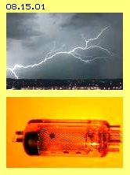
Diese Wirbelkomplexe schwirren nun zusätzlich zu den Wirbeln der materiellen Partikel im Raum und bilden die sogenannte ´Raum-Ladung´. Auch diese freien Elektronen kollidieren miteinander und stoßen sich gegenseitig ab, weil sie an den zusammen treffenden Teilen ihrer Aura-Oberflächen mit größter Wahrscheinlichkeit unterschiedliche Ätherbewegungen aufweisen. Diese Wirbelkomplexe verhalten sich durchaus analog zu Gas-Partikeln: sie bewegen sich in alle Richtungen in chaotischer Weise, kommen aber weiter voran, wenn sie zufällig in Bereiche relativer ´Leere´ gestoßen werden. Ein solches Elektron hinterlässt ´freien Raum´, in welchen nachfolgend andere Elektronen ebenso weit voran kommen. Entlang dieser ´Strassen´ gleichförmiger Vorwärtsbewegung nimmt der Äther adäquate Bewegung an, d.h. es wird obiges Bewegungsmuster röhrenförmiger Wände gebildet.
Die nachdrängenden Elektronen stoßen die ´Leader´ voran, die aber nur wenige Zentimeter vorwärts kommen, wo sie an ´wirbel-dichteren´ Zonen aufgehalten werden. Aus diesem Staubereich entkommen die Elektronen wiederum nur in Richtung relative geringer Wirbeldichte. Der Blitz nimmt keinen geraden Weg, wie er durch vermeintliche Anziehungskräfte zwischen ungleichnamigen Ladungen (der Wolke und der Erde) vorgegeben wäre. Der Blitz ´sucht´ auch nicht diesen Weg, vielmehr ´irrt´ er immer nur in Richtung geringeren Widerstands voran, z.B. auch nur innerhalb der Gewitterwolken selbst. Die Spitze kommt nur voran aufgrund der nach-drückenden Elektronen, wobei auf den vorbereiteten ´Gleitspuren´ immer mehr in gleiche Richtung fliegen. Die aetherische Röhre weitet sich aus bzw. entlang dieser kommt geordnete Bewegung und ´Strömung´ zustande.
Man muss immer wieder bedenken, dass der Äther selbst ortsfest ist. Die Erscheinung von Vorwärts-Bewegung bzw. Strömung kommt immer nur zustande, indem Äther sich schwingend auf Bahnen-mit-Schlag bewegt oder die Struktur von Wirbelkomplexen durch den Raum weiter gereicht wird. Eine optimale Bewegungsform ergibt sich, wenn das Schlagen diagonal-vorwärts in diesen Röhren erfolgt. Die Elektronen ordnen sich praktisch zur schwingenden Wand dieser Röhre und bilden nun eine Ladungsfläche bzw. einen Ladungs-Strom, der ´frei-schwebend´ im Äther ist (also nicht gebunden an einen Leiter oder materielle Partikel). Natürlich wird dabei auch die tangierte Luft ´ionisiert´, aber entscheidend sind die Bewegungen im Äther selbst.
´Normaler´ elektrischer Strom wandert entlang einer Leiteroberfläche etwa mit Lichtgeschwindigkeit. Der Blitz erreicht nur ein Zwanzigstel davon, also maximal 15000 km/h. Die originären Elektronen werden frei gesetzt im unteren Teil der Gewitterwolken durch Kollision von Partikeln, die Geschwindigkeiten von nur etwa 500 m/s haben. Es tritt dabei ´Stress´ auf, der aber nicht stark genug ist für die Generierung elektromagnetischer Strahlung (mit deren Lichtgeschwindigkeit). Woher also kommt diese enorme Beschleunigung der freien Elektronen bzw. dieses elektrischen Flusses?
Wiederum verhalten sich die freien Elektronen analog zu Gas-Partikeln: bei Mehrfach-Kollisionen übertragen mehrere Elektronen ihre Geschwindigkeit gemeinsam auf einen ´Raser´ und bleiben zurück als ´Steher´ (siehe Kapitel ´06.03. Überschall-Motor´ mit der Beschreibung der Effekte in Laval-Düsen). Der Blitz wird immer wieder aufgestaut und aus der Ansammlung von Elektronen-Wirbeln fliegen einzelne durch ´Düsen´ (einer ´Schwachstelle´) mit überhöhter Geschwindigkeit hinaus. Dieser Vorgang wiederholt sich bzw. potenziert sich bis zu dieser hohen Geschwindigkeit der Elektronen im Blitz (weit schneller als die viel sperrigeren Wirbelsysteme der materiellen Partikel fliegen können).
Zudem ergibt sich in vorigen Ladungs-Röhren der ´Fließband-Effekt´: die Wände schirmen den Innenraum nach außen ab und die Innenseite der Wände weisen den oben angesprochenen diagonal-vorwärts gerichteten Schlag auf. Solche Wände können sich mehrschichtig ausbilden, so dass im Zentrum eine ´Gleitbahn´ für rasend vorwärts fliegende Elektronen gegeben ist. Darum kommt der Blitz voran durch die Luft, ohne die theoretisch erforderliche Spannung aufzuweisen bzw. obwohl maximal nur ein Hundertstel der theoretisch notwendigen Durchschlag-Feldstärke gemessen wird.
Das riesige Reservoir freier Elektronen in der Gewitterwolke drückt in die vorbereiteten Kanäle, wobei diverse Zweige sich vereinigen können - bis sich letztlich die gesamte ´Ladung´ auf die Erdoberfläche ergießt. Das führt zu einem starken Anschwellen der dortigen normalen Ladungs-Aura. Anschließend tritt die Wirkung des generellen Ätherdrucks zutage, indem er diese überhöhte Schwingungsschicht ´platt´ drückt. Die Ladung wird in die Umgebung verteilt, wobei diese Schub-Bewegung allerdings behindert wird durch die rauhe Erdoberfläche. Dieser Widerstand ist weit höher als der im entleerten Blitzkanal, dessen ´aetherische Hülle´ noch immer im Raum steht. Der auf die Erdoberfläche anstehende generelle Ätherdruck ´schießt´ darum in aller Regel umgehend die Ladungsanhäufung zurück in die Wolken.
Vakuum- bzw. Elektronen-Röhre
Für diesen Prozess gibt es ein Beispiel auch in ´handlichem Format´. Die Bewegung von Elektronen in Vakuum- bzw. Elektronen-Röhren finden nur im Äther statt, d.h. ohne materielle Gas-Partikel (spezielle Gase werden nur eingesetzt zur Erzeugung farbiger Lichterscheinungen). An der (aufgeheizten) Kathode werden freie Elektronen abgestoßen. Diese fliegen aber nicht geradewegs zur Anode, weil es weder ´positive Ladung´ noch vermeintliche ´Anziehungskräfte´ zwischen Ungleichnamigem gibt.
Vielmehr ´irren´ die Elektronen in der luftleeren Elektronen-Röhre umher und nur zufällig treffen sie auf die Anode (wo sie aufgrund geringer Stärke der dortigen Ladungsschicht abfließen können). Sie hinterlassen allerdings eine Spur im Äther und in dieser ´rein aetherischen Rohrpost´ können nachfolgende Elektronen viel schneller und ´zielsicher´ den Weg zur Anode zurück legen.
Wenn in der Elektronen-Röhre ein Gitter installiert ist und wenn dieses unter Spannung gesetzt wird, werden diese Gleitwege ´gequetscht´ und die Elektronen vor dem Gitter zurück gehalten. Wird die Spannung weg genommen, ´schusseln´ die Elektronen erneut herum und wenn sie die alte Bahn wieder zufällig finden, rasen sie auch wieder schnell zur Anode.
An diesem Beispiel ist zu erkennen, dass die Größe der Elektronen nach gängiger Vorstellung total unterschätzt wird. Wie sollen solch winzige ´Teilchen´ durch millimeterweite Gittermaschen behindert werden? Ich vermute, dass die Aura mindestens 10000-fach weiter ist als der bislang nur betrachtete Bewegungskern der Elektronen. Gleiches gilt für die Höhe der Ladungsschichten, die an einem Leiter immer nur außen anliegen. Bei Hochspannungs-Wechselstrom-Leitungen ist diese Aura (bzw. dort der pure Äther-Stress) über viele Meter noch körperlich wahrnehmbar.
Generell ist also festzustellen, dass elektrische Ladung originär nur an materiellen Oberflächen auftreten kann (wie z.B. an den Luft- bzw. Wasser-Partikeln der Gewitterwolken). Andererseits werden Teile der Ladung auch von den Ladungs-Trägern abgesprengt, hier z.B. durch Frontal-Kollision der Partikel in den Wolken bzw. durch Aufheizen der Kathode (und/oder hoher Spannung). Die freigesetzten Elektronen bewegen sich keinesfalls zielgerichtet (geführt durch mysteriöse Anziehungskräfte), hinterlassen aber Bewegungs-Spuren im Äther. Diese werden vorzugsweise röhrenförmige Gebilde sein, innerhalb denen die nachfolgenden Wirbelkomplexe mit sehr viel geringerem Widerstand vorwärts kommen.
Äther-Röhren
Mit Bild 08.15.02 soll noch einmal aufgezeigt werden, warum diese ´aetherischen Röhren´ häufig zustande kommen. Bei lokalen Erscheinungen muss aller Äther prinzipiell synchron schwingen. Bei A ist dies durch zwei Uhren (weiß) skizziert, wobei beide Zeiger (rot) momentan nach oben weisen. Alle Ätherpunkte einer Wand (blau) befindet sich oberhalb ihrer Drehpunkte. Nach einer halben Drehung weisen die Zeiger nach unten (bei B) und damit sind alle Ätherpunkte nun etwas tiefer positioniert. Aller Äther dieses Bereiches schwingt analog, d.h. diese Wand wäre unendlich in der Höhe und der Breite - und somit keine lokal begrenzte Erscheinung.
Lokal begrenzt kann dieses Schwingen sein, wenn die Wand zu einer Röhre geformt ist. Allerdings schwingt dann noch immer die ganze Rohr-Wandung nach oben und wieder nach unten (bei C und D). Auch hier wäre die Röhre noch immer unendlich lang, würde quer durch das Universum reichen. Erst wenn die Uhren zeitlich versetzt sind (wie grob bei E skizziert ist), schwingt einerseits der Äther aufwärts und nicht weit davon entfernt zugleich abwärts, kann lokal also ein Ausgleich zustande kommen. Diese Wand mit unterschiedlichen Phasen des Schwingens kann natürlich auch wieder zu einer Röhre geformt sein (wie bei F skizziert ist).
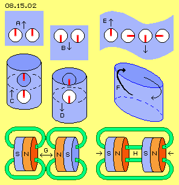
Die Ätherbewegungen sind damit auf den Radius der Röhre begrenzt (natürlich inklusiv der Ausgleichsbewegungen einer äußeren und inneren Aura). Und diese Röhre weist nun nicht mehr zwingend eine unendliche Länge auf. Andererseits kommt damit eine besondere Dynamik der Ätherbewegungen auf (wie in vorigen Kapiteln bereits dargestellt wurde): dieses zeitlich versetzte Schwingen erfordert zwingend die Bewegung auf Bahnen-mit-Schlag oder auf Rosetten-Bahnen (wo alle Schwingungen nurmehr um einen Fokus kreisen).
In diesem Bild bei F ist die Richtung des Schlagens durch einen dicken Pfeil angezeigt, wo die Bewegung relativ schnell diagonal-aufwärts erfolgt. Der dünne Pfeil markiert die nachfolgende Bewegung, die langsamer diagonal-abwärts verläuft. Es ergibt sich die Erscheinung einer rundum laufenden Welle. Diese ist nicht gleichförmig bzw. symmetrisch, vielmehr schlagen deren rundum laufenden ´Wellenkämme´ immer in eine Richtung (hier diagonal-aufwärts). Je nach Links/Rechts-Drehsinn der ´Uhren´ und deren zeitlich versetzten ´Zeigern´ kann die Welle vor- oder auch rückdrehend sein. Diese Äther-Röhren zeigen also intensive Bewegung ihrer Wände, welche den Innenraum nach außen abschirmen. Zusätzlich wird im Inneren nochmals intensiverer ´Transport´ von Bewegungsmustern ermöglicht.
Magnetfeld-Linien bzw. -Röhren
In diesem Bild 08.15.02 sind unten vier Permanentmagnete schematisch skizziert. Vom Nordpol (N), auf seiner gesamten Fläche (dunkelrot), ´strömt das Magnetfeld´ hinaus. Die Ursache ist ein bestimmtes Schwingungsmuster zwischen den (im Gitter gleichgerichteten) Atomen. Diese schraubenförmige, vorwärts gerichtete Bewegung ist so stark und geordnet, dass sie über den Nordpol hinaus reicht. Der umgebende Freie Äther mit seinem feinen Schwingen übt den allgemeinen Ätherdruck aus, welcher dieses grobe Schwingen ´platt-drücken´ möchte. Darum ´flüchten´ die Feldlinien auf möglichst kurzem Weg in benachbartes Eisen (hier nicht dargestellt), in welchem diese Bewegungsform weiter laufen kann. Letztlich führen die Feldlinien zu einem Südpol (S), wo ohnehin eine entsprechende ´Strömung eingesaugt´ wird.
Die ´Magnetfeld-Strömung´ ist real ein Schwingen auf Bahnen-mit-Schlag, eine diagonal-vorwärts laufende Welle, d.h. die ´Feldlinien´ sind exakt die oben beschriebenen Äther-Röhren. Das Magnetfeld insgesamt erscheint homogen, aber nur weil dünne Röhren dicht beisammen parallel verlaufen. In diesem Bild sind schematisch nur jeweils zwei dieser Magnetfeld-Röhren (grün) eingezeichnet.
Links unten im Bild sind zwei flache Magnetscheiben skizziert, deren Nordpole gegenüber stehen. Das Schwingen bzw. die umlaufende Welle der Röhren aus beiden Polen sind gegenläufig. Der Äther zwischen beiden Pol-Flächen kann aber nicht links- und zugleich rechtsdrehend sein. Darum können gleichnamige Pole nicht zusammen geführt werden bzw. sie stoßen sich ab (siehe Doppelpfeil G).
Rechts unten im Bild steht dem Nordpol ein Südpol gegenüber und ´selbstverständlich´ ziehen sich beide an. Real schwingen dort alle Magnetfeld-Röhren gleichsinnig, so dass innerhalb beider Magnete (bzw. nur zwischen deren Atomen) und im freien Raum (H) zwischen den Pol-Flächen aller Äther analoge Bewegungen ausführen kann.
Auf der Aura aller materieller Körper wie auch auf dieser zusätzlichen ´magnetischen´ Schwingungsschicht lastet der allgemeine Ätherdruck. Dieser Druck wirkt aus allen Richtungen auf alle Oberflächen, z.B. auf beide Magnete auch von links und rechts (siehe Pfeile). Nur auf die beiden Flächen zwischen den beiden Magneten hat dieser Druck keine Angriffsfläche, weil dort der Äther in sich geschlossene Bewegungen ausführt: die Bewegung innerhalb einer Röhre ist durch die Röhrenwand geschützt, die äußeren Röhren bieten Schutz für die inneren. Auf den beiden äußeren Pol-Flächen liegt also der generelle Ätherdruck an, auf den beiden mittigen Pol-Flächen aber nicht.
Aufgrund dieser Druck-Differenz werden beide Magnete zusammen gedrückt. Ungleiche Pole ziehen sich nicht an und ganz generell gibt es keine Anziehung zwischen Ungleichnamigem. Noch nie konnte irgend jemand plausibel erklären, was Anziehungskräfte sein sollen und wie sie funktionieren sollten. Es gibt viele Erscheinungen, bei welchen scheinbar eine anziehende Kraft wirksam ist, z.B. der Sog in Fluid - aber auch dieser ist vollkommen wirkungslos, weil Wirkung sich nur aufgrund eines stärkeren Drucks auf der Gegenseite ergibt.
Die falsche Interpretation solcher Erscheinungen und die Unterstellung von Anziehungskräften war ein verhängnisvoller Fehler in vielen Bereichen, z.B. vom Aufbau der Atome über die Elektrotechnik bis hin zur Astronomie. Es gab immer Naturwissenschaftler, welche vor dieser einseitigen Betrachtung warnten, aber dennoch wurden ´Anziehungskräfte´ zur gängigen Selbstverständlichkeit der Mainstream-Wissenschaften. Dadurch wurde versäumt, Erkenntnisse über die wahren Ursachen zu gewinnen - und damit auch effektivere technische Möglichkeiten zu realisieren. In der Astronomie nimmt man z.B. lieber 95 % ´dunkle Materie oder Energie´ in Kauf (weil die bekannte Materie nicht ausreichend ist für die Rechnungen per Gravitations-Anziehungskraft) anstatt andere Ansätze zur Lösung der Probleme zu suchen.
Gravitations-Röhren
Aus der gesamten Nordpol-Fläche tritt diese ´Magnet-Strömung´ aus und entsprechend in die Fläche eines Südpols ein. Die analoge Erscheinung einer ´Gravitations-Strömung´ trifft auf die gesamte Erdoberfläche ein - so eine alternative Anschauung zur Gravitation als anziehende Kraft. Tatsächlich ergibt sich dieser Effekt wiederum nur aus einer Ätherbewegung auf Bahnen-mit-Schlag.
Aller Äther kann aber nicht gleichzeitig auf die Erde hin schwingen, weil im Zentrum einfach nicht ausreichend Raum dafür ist (und was generell für die ´Gravitations-Strömungstheorien´ gilt). Vielmehr weist nur das Schlagen einer schwingenden Bewegung in Richtung Erde, ergänzt durch eine langsamere Rück-Bewegung, wiederum strukturiert in vielen sehr dünnen ´Gravitations-Röhren´ analog zu vorigen Beispielen. Die Ursache dieser (lokalen, auf die Umgebung eines Himmelskörpers beschränkten) Ätherbewegung wird im späteren Kapitel ´Erde´ beschrieben.
Sonnenwind-Röhre
Als Beispiel ´aetherischer Röhren´ soll noch eine riesige Ausführung diskutiert werden, wobei der Rohr-Durchmesser dem der Erde und die Rohr-Länge einer astronomischen Einheit entspricht. Bild 08.15.03 zeigt eine schematische Graphik zur Erscheinung des Sonnenwindes. Erstaunlicherweise gibt es hierbei einige Parallelen zur obigen Erklärung des Blitzes.
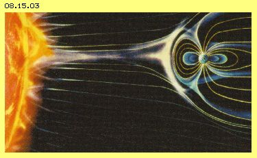
So sollen in der Korona der Sonne die Teilchen des Sonnenwindes elektrisch aufgeladen (ionisiert) und erst über der Erde die Elektronen abgetrennt werden (woraus sich z.B. die Erscheinung des Nordlichts ergibt). Die Korona soll eingeschlossen sein in einem starken Magnetfeld und nur an Schwachstellen können phasenweise die Partikel des Sonnenwindes entweichen bzw. werden wie durch Düsen hinaus gedrückt und beschleunigt. Dieser ´Sturm´ rast mit rund 350 km/s (nicht km/h) hinaus ins All. Ein Teil trifft auch auf die Erde bzw. wird entlang ihrer Aura umgelenkt (siehe Bild).
Als faktisch belegt gilt auch, dass die Partikel nicht radial von der Sonne weg, sondern auf spiraliger Bahn zur Erde fliegen und dabei eine ´magnetische Hülle´ mitführen. Deren Durchmesser entspricht etwa dem der Erde. Der Drall innerhalb dieser Röhre wird durch die Rotation der Erde bestimmt, wobei die ´Steigung der Wendelung´ variabel ist (zwischen 45 und 90 Grad, in Abhängigkeit von der Erd-Rotations-Richtung in Bezug zur Sonne).
Dies erinnert nun stark an Gesetzmäßigkeiten der Fluid-Technologie, wo z.B. eine Drehbewegung bzw. Sog weit zurück reicht in den Einlass-Bereich, so dass eine langgestreckte Strömung (bzw. besonders ein Wirbel) praktisch ´von hinten her´ intensiviert wird. Zudem stimmen die Merkmale des Sonnenwindes überein mit den Bewegungsprozessen der oben diskutierten ´aetherischen Röhren´. Durch den Äther zwischen Sonne und Erde wandern wiederholt die Wirbelstrukturen geladener Teilchen und hinterlassen Spuren, die sich zwangsläufig zu ´Gleitbahnen´ entwickeln, letztlich in optimaler Form dieser Äther-Röhren. Wie beim Blitzkanal ergeben sich darin bessere ´Transport-Möglichkeiten´ und die Erde bekommt damit auch mehr Sonnenwind ab, als ihr rein flächenanteilig zustünde. Die Masse der Partikel fliegt spiralig entlang der Röhrenwand, d.h. dort ist das erdwärts-gerichtete Schlagen am stärksten. Im Zentrum der Sonnenwind-Röhre herrscht dagegen ein ´Sog´, d.h. dort ist die langsame, sonnenwärts-gerichtete Rückbewegung dominant.
Alle Planeten haben ihre spezielle Sonnenwind-Röhre. Wenn Merkur und Venus unsere Röhre kreuzen, gibt es einige Tage lang starke Störungen. Wenn die Erde die Sonnenwind-Röhren äußerer Planeten kreuzt, kann die Geschwindigkeit des Sonnenwindes dreifach schneller werden (was zu Problemen bei Satelliten führt). Erstaunlich ist die Tatsache, dass solch gesetzmäßige Wirkungen über solche Entfernungen auftreten - was nicht in einem ´leeren Raum´, sondern nur in einer realen Äthersubstanz möglich ist (wobei all diese ´Magnetfelder´ nicht nur fiktive Rechengrößen sein können, sondern reale Auswirkung haben, also letztlich nur die realen Bewegungen eines realen Mediums sein können).
Drusen
Bergkristalle findet man in Glas-Vitrinen - nachdem sie ein ´Strahler´ in Spalten und Klüften der Gebirge mühsam aufgespürt hat. Diese eindrucksvollen Gebilde bestehen fast nur aus Quarz, also dem häufigen Molekül SiO2, aber sie entstehen offensichtlich nur in einer ´abgeschlossenen Welt´. Es gibt unscheinbare Klumpen und wenn man sie aufschneidet, zeigt sich eine ´kristalline Wunderwelt´. Diese ´Drusen´ sind klein wie Nüsse, oft faustgroß oder auch einen Meter hoch. Die Mineralogen kennen eine Vielfalt von Gesteinen wie auch kristalliner Formen - aber es ist nicht abschließend geklärt, wie diese Gebilde zustande kommen.
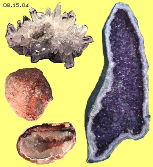
Oft entstanden Hohlräume in vulkanischem Gestein als Blasen von Gas, das beim Abkühlen eingeschlossen blieb. In diesen Hohlräumen befindet sich dann aber kein Material in amorpher Form, das anschließend auskristallisieren könnte (wie Wasser zu Eis kristallisieren kann). Drusen und Quarzkristalle treten auch in Gestein auf, welches niemals aufgeschmolzen war und in dem überhaupt kein Quarz vorhanden ist. Fraglich ist auch, ob die Kristalle von außen nach innen wachsen - oder von innen her das Material in kristalline Form übergeht oder gar die ganze Druse wächst. Allerdings bleibt auch dann die Frage, woher das geeignete Material kommen soll. Auf jeden Fall ist das Wachstum so langsam, dass diese Frage kaum experimentell zu beantworten ist.
Ich habe mich bislang mit Themen der Mineralogie nicht befasst. Aufgrund meiner Überlegungen zu den Bewegungs-Strukturen des Äthers (und besonders der ´aetherischen Hüllen´) möchte ich dennoch einen spekulativen Beitrag zur Erklärung dieser phänomenalen Erscheinungen einbringen.
Durch das Gestein dringen vielfältige Strahlungen bzw. innerhalb und zwischen den Gesteins-Teilchen gibt es diverse Äther-Schwingungen. In einem Hohlraum können sich diese aufschaukeln bzw. je nach Beschaffenheit der Wände werden per Resonanz bestimmte Schwingungsmuster intensiviert oder gar dominant. Wenn dort Quarz-Material und geeignete Schwingungsmuster vorhanden sind, wird dieses Material sich zu Kristallen ordnen. Damit wird gerade dieses Schwingungsmuster innerhalb des Hohlraumes verstärkt. Dieses hat wiederum ordnende Wirkung auf die Wände. Umgekehrt können nun in den Hohlraum bevorzugt entsprechende Schwingungen eintreten. Gegenüber nicht-adäquaten Einflüssen wirken die Wände aber zunehmend als hemmender Filter. Auch wenn letztlich keine geeignete materielle Substanz mehr vorhanden ist, könnten sich an die vorhandenen Kristalle passende Bewegungsmuster anlagern - aus ´immateriellen´ Schwingungen also geordnete Materie entstehen.
Natürlich höre ich schon beim Schreiben den Aufschrei vieler Leser, die genau zu trennen wissen zwischen Materie und Geist - oder die Existenz von Geistigem kategorisch ausschließen. Ich möchte daran erinnern, dass moderne Physik sehr wohl Masse mit Energie gleich setzt, auch Energie mit Information gleich setzt, also mit rein geistig-abstrakten Begriffen umgeht. Es gibt durchaus die Vorstellung, dass Energie zu Materie ´kondensieren´ könnte. Ich allerdings gehe davon aus, dass es überhaupt keine materielle Teilchen geben kann, auch keine ´abstrakte´ Energie, noch ausschließlich ´geistige´ Information. Aber es gibt reale Schwingungen im realen Äther - und diese können sich sehr wohl verdichten und dann die Bewegungsmuster auch ´materieller´ Erscheinungen ergeben.
Aufgeprägte Informationen
In der Homöopathie wird unter anderem ein Wirkstoff so weit verdünnt, dass er chemisch nicht mehr nachweisbar ist. Dennoch bleibt er z.B. zur Behandlung einer Krankheit wirksam (warum sonst sollten die Institutionen zur ´Verwaltung und Pflege der Kranken´ diese kostengünstige Konkurrenz so vehement bekämpfen). Beim Prozess des ´Potenzierens´ wird aber nicht nur ein Tropfen der Wirksubstanz in ein Fass gegeben und tausend Liter Wasser nach gefüllt, vielmehr sind sorgfältige Verfahren anzuwenden, damit die ´Information´ auf ein großes Volumen übertragen wird - und stärker wirksam ist als in konzentrierter Form.
Anderen gelingt diese Übertragung von Information (z.B. ´Sauerstoff´) auch auf irgend ein Gesteins-Mehl oder Holz und auch andere Substanzen. Werden geringe Mengen dieser Informationsträger z.B. in einen ´toten´ See gegeben, weist das Wasser dort nach einiger Zeit tatsächlich mehr Sauerstoff auf. Es sind vielfältige andere Effekte zu erreichen, die aber mit klassischer Messung kaum zu verifiziert sind (z.B. ´energetisches Wasser´ und vieles andere). Besonders geeignet als Informationsträger ist das Wasser, es ist weit mehr als nur die chemische Substanz H2O und wird darum oft als ´Lebenselixier´ bezeichnet.
Natürlich ergibt sich die Frage, wie die ´Information´ gespeichert sein soll, gerade bei der veränderlichen Form der Wasser-Flüssigkeit. Nach klassischem Verständnis gibt es nur winzige Atomkerne, die von noch winzigeren Elektronen umkreist werden, mit großem Abstand, d.h. auch kompakte Materie besteht weitgehend aus ´Nichts´. Bei meinem Verständnis von Äther ist es total anders: überall ist nichts als Äther-Substanz, in welcher lokal bestimmte Wirbelmuster sind, mit längerem oder kürzerem Abstand zueinander. Auch hier ist also unendlich viel Raum für zusätzliche Ätherbewegung, zwischen den Wirbeln oder auch alle Wirbel können zusätzlich überlagert sein durch weiträumiges, feines Schwingen.
Es kann also jede Menge ´feinstofflicher Information´ eingebettet sein im ´Grobstofflichen´. Ich denke, dass die Träger-Substanz als ´Schutzraum´ dient für das aufgeprägte Informations-Schwingen (im esoterischen Vergleich also wie eine Seele einen Körper bewohnt). Die ´Information´ ist nicht nur mittig in einer Schutz-Hülle, sondern überall im Bereich der Träger-Substanz als Schwingungsmuster vorhanden (also omnipräsent wie in einem Hologramm). Das Träger-Material kommt in Berührung mit anderer Materie und überträgt dabei die zusätzliche Schwingung. Der Träger wird pausenlos durch irgendwelche externen Einflüsse tangiert und ´moduliert´ deren Schwingen, so dass die Information auch über Distanzen weiter gereicht wird. Die Information selbst bleibt dabei nur stabil, wenn sie innerhalb des Trägers fortwährend resonant schwingen kann - was verlustfrei nur in einem lückenlosen Äther möglich ist.
Ich weiß, auch dieses Thema wird von vielen Menschen als blanker Unsinn abgetan. Ich will auch niemanden überzeugen. Andere mögen diese Überlegungen als Bestätigung ihrer eigenen Erfahrungen sehen - die substanziell sind, weil basierend auf der Realität der Äther-Substanz.
Orgon-Akkumulator und Cloud-Buster
Viele Leser werden schon bei der Diskussion ´vielschichtiger Wände´ des vorigen Kapitels an Wilhelm Reich gedacht haben und seinen ´Orgon-Akkumulator´. Reich hatte eine ´Lebenskraft´ beschrieben (wobei sein ´Orgon´ etwa ´Chi´ oder ´Prana´ entspricht), aber auch eine lebensfeindliche Variante davon (die er ´Dor´ nannte). Auch heute noch werden solche Behältnisse gebaut, bestehend aus fünf oder sieben Doppellagen von Stahlblech, Glaswolle, Steinwolle oder auch organischem Material. Im Innenraum ist erhöhte Temperatur messbar, was aber mit herkömmlicher Physik erklärbar ist ohne eine spezielle Kraft zu unterstellen. Generell aber ist fraglich, wozu man Lebenskraft in einer Kiste konzentrieren sollte - wo doch jeder Organismus sie direkt aufnehmen kann (siehe unten).
Naturwissenschaftler kennen bestimmte physikalische Kräfte und wehren sich gegen die ´Erfindung´ neuer, unbestimmter Kräfte - zurecht, weil es keine eigenständigen Kräfte gibt, sondern nur unterschiedliche Muster von Schwingungen in nur einem Äther. Über die physikalisch messbaren Kräfte hinaus gibt es jedoch Schwingungen, die nicht weniger real und wirksam sind. Und je nach umgebender ´Hülle´ sind diese konzentriert und real erfahrbar. Manche gehen dazu in einen schönen Wald - und erleben das Fehlen der Hülle und Schwingungen z.B. in einer ´lebensfeindlichen´ Wüste. Aber Menschen sind unterschiedlich sensibel wie auch erstaunlich anpassungsfähig: manche fühlen sich ´zuhause´ in den Schluchten zwischen Wolkenkratzern, andere denken dabei nur noch an Flucht.
Wilhelm Reich konzipierte auch einen ´Cloud-Buster´ und erreichte erstaunliche Ergebnisse bei seinen Experimenten. Auch heute werden vermehrt wieder solche Maschinen gebaut (siehe Bild 08.15.05 unten rechts). Sie bestehen z.B. nur aus Kupferrohren, Bergkristallen, Metallspänen und Holz, unten zusammen gehalten durch Harz. Zweifelsfrei können in Kristallen per Resonanz geeignete Schwingungen verstärkt und per Rohren eine gerichtete Abstrahlung erreicht werden (so wie die kleine Erde über riesige Entfernung den Sonnenwind ordnet). Es wird berichtet, dass mitten in der Wüste damit Regen zu machen ist, dass Chemtrails aufgelöst werden oder ganz generell eine positive Schwingung in weitem Umfeld aufzubauen ist.
Ich weiß, all dies mag nach Esoterik riechen (deren Diktion wie deren Merkantilismus ich ablehne). Aber selbst reine Materialisten wissen, dass es z.B. eine unglaubliche Bandbreite elektromagnetischer Wellen gibt, von der wir nur ausschnittsweise Kenntnis haben. Man muss also generell davon ausgehen, dass es noch vielfältig mehr Varianten physikalischer Schwingungen gibt, die mit gängigen physikalischen Messgeräten nicht nachweisbar sind. Genauso unbestritten sind dann auch diese ´para-physikalischen´ Schwingungen durch geeignete ´Filter´ zu trennen und durch ´Verstärker´ zu intensivieren. Genau das wird in vielfältiger Form in dieser Szene alternativer Physik betrieben, je nach Qualifikation mit mehr oder weniger seriösen Ergebnissen (also vollkommen identisch zur gängigen Wissenschaft bzw. ihrer Auftraggeber).
Wasseradern und Ley-Lines
Leider geben sich fähige Rutengänger immer wieder für Tests unter ´wissenschaftlichen Bedingungen´ her - und versagen regelmäßig (was kein Wunder ist in ´steriler´, also lebensfeindlicher Umgebung). Eigentlich hat jeder Mensch ´para-normale´ Fähigkeiten, heute aber verfügen nur noch wenige über ausreichend ´Sensibilität´. Die Besten aber erzielen hohe Erfolgsquoten z.B. beim Aufspüren von Wasser. Rutengänger berichten, dass die Schwingungen wie ein schmaler ´Vorhang´ im Raum stehen und aus deren Intensität können sie u.a. die Tiefe der Fundstellen beschreiben.
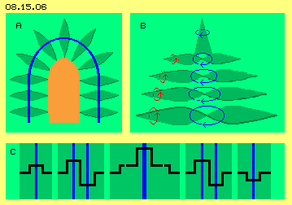
Im vorigen Kapitel habe ich theoretisch verschiedene Form möglicher Ätherbewegungen abgeleitet, wobei die Höhe der Wände begrenzt ist und ihr Entstehen und Bestehen eine ´Quelle´ voraussetzt. In Bild 08.15.06 ist rechts bei B nochmals das ´Tannenbaum-Muster´ skizziert, das sich aus Doppel-Ausgleichskegeln ergibt, die nach oben immer weniger ausladend sind. Links bei A ist das ´Torbogen-Muster´ skizziert, wo eine Einfach-Kurbel um einen Sperrbereich läuft, der z.B. aus einem Tannenbaum bestehen kann. Diese Sperre könnte aber auch durch ein komplexes Muster gebildet werden, wie z.B. unten im Bild bei C durch eine siebenfache Wand skizziert ist (Details siehe voriges Kapitel).
Im Boden ist viel Raum für Ätherschwingungen, deren Ordnung entsprechend zu den ´materiellen´ Ätherwirbeln der dortigen Partikel des Gesteins bzw. der Erde sind. Dort sind auch immer irgendwelche Kristalle gegeben, welche Schwingungen durch Resonanz verstärken können. Wasser ist ein Medium, das Bewegungsmuster besonders gut speichern und weiter leiten kann. Im Untergrund befindet sich Wasser immer über einer wasser-undurchlässigen Schicht, wobei es immer in einer Mulde lagert oder fließt. Diese wirkt wie ein ´Hohlspiegel´, so dass dieser konzentrierte ´Schwingungs-Vorhang´ begrenzter Höhe zustande kommt. In Gestein fließt unterirdisch das Wasser meist am Grund von Klüften und das Schwingen kann in diesen Spalten zu ´aetherischen Wänden´ ausgerichtet werden.
Wasseradern senden keine elektromagnetischen Wellen aus. Es gibt keine bestimmte Frequenzen oder ´stehende Wellen´. Es ist vielmehr nur ein feines Schwingen des Äthers vorhanden, nicht nur in planer Ebene sondern auch mit vielen Krümmungen, von wechselnder Intensität und vielfach überlagert, inklusiv der Ausgleichsbewegungen in vertikaler wie horizontaler Ebene. Es ist darum nicht verwunderlich, dass gängige physikalische Messgeräte solche Schwingungs-Wände nicht registrieren können. Die ´mentale Aura´ eines Rutengängers aber nimmt dieses flexible und variable Schwingen durchaus wahr, weil sein Resonanz-Vermögen sehr viel variabler ist. Der materieller Körper des Rutengängers kann per simpler Rute das Ergebnis auch mechanisch anzeigen.
Bei anderen ´Erdstrahlen´ - oder Ley-Lines oder Geomantischen Gittern - ist das Wasser als Speicher- und Transportmittel nicht gegeben. Alle Atome zittern unablässig, der Äther wird dazwischen hin und her gestoßen - oder ´sucht ein niedrigeres Energie-Niveau´ bzw. geringeren Widerstand, d.h. es kommt automatisch zu mehr Ordnung. Dieses wiederum begünstigt die kristalline Ausrichtung der Partikel. Umgekehrt wird das resultierende Schwingen intensiviert, wo vermehrt Kristalle vorhanden sind. An solchen ´Kraft-Orten´ können selbst Normal-Bürger etwas empfinden. Viele Forscher dieser ´para-normalen´ Erscheinungen haben durchaus taugliche Messgeräte konzipiert - und ´normale Forschung´ wäre gut beraten, diese Untersuchungen professionell zu unterstützen.
Steine schneiden
Auf allen Kontinenten gibt es Reste der ´Megalith-Kultur´, z.B. in Baalbek / Libanon (siehe Bild 08.15.07). Dort ist eine gut erhaltene Akropolis (links) zu sehen und sechs verbliebene Säulen (ganz rechts) des größten Tempels, den die Römer zu Ehren Jupiters gebaut haben. Das eigentlich Bemerkenswerte aber ist das Fundament, ein viele tausend Jahre älteres, riesiges Plateau. Dieses ist errichtet aus verschiedenen Lagen von perfekt geformten Steinblöcken, die ein paar Tonnen wiegen, viele aber jeweils 500 und die größten rund 1500 Tonnen schwer sind (während die Steinblöcke der Pyramide von Giseh im Schnitt nur 2,5 Tonnen wiegen).
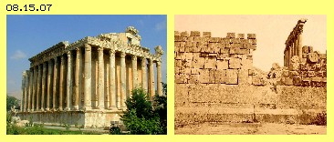
In alten sumerischen Schriften wird über die ´Anunnaki´ detailliert berichtet, auch wo und wozu Enki und Genossen ihre Bauwerke erstellten (siehe Sitchin u.a.). Nirgendwo rund um den Globus jedoch wurden bis jetzt Beschreibungen gefunden, wie die Bearbeitung und der Transport dieser Mega-Steine bewerkstelligt wurde (was beschämenderweise heutige Technik nicht leisten könnte). Ich möchte aus meiner Sicht des Äthers, seiner Bewegungs-Notwendigkeiten und -Möglichkeiten, eine rein spekulative Erklärung bzw. grobe Bauanleitung wagen.
Man produziere polarisiertes Licht und führe es durch einen schmalen, länglichen Spalt, so dass aus diesem nur ein flächiges Äther-Schwingen austritt. Natürlich wird dieses umgehend und automatisch auf beiden Seiten durch Ausgleichskegel ergänzt. Analog dazu produziere man eine zweite Schwingungsfläche, jedoch anderer Frequenz (jeweils verstärkt analog zur Laser-Technik). Beide (oder viele) werden in eine Fläche zusammen geführt, so dass die Überlagerung ein Schwingen auf Rosetten-Bahnen ergibt. Es sind parallel zueinander mehrere solcher Wände zu bilden, jeweils mit unterschiedlichen Schwingungsmustern (also auch vor- und rückdrehend). Damit dieses Schwingungs-Sandwich nicht unendlich weit reicht, wird es in eine umlaufende, einfache Kurbel eingebettet. Es ergibt sich eine Bewegungs-Struktur analog obigem ´Torbogen-Muster´ mit mehreren extrem sperrigen Wirbelflächen dazwischen (siehe Bild 08.15.06 bzw. voriges Kapitel).
Im Prinzip entspricht dies einem Tranchiermesser mit mehreren Klingen, wobei jede über unterschiedlichen Exzenter-Mechanismus elektrisch angetrieben ist. Die Klingen dieses ´Äther-Stein-Schneiders´ sind zusammen aber kaum einen Millimeter breit (die ´Hopi´ berichten z.B. von handlichen Kristallen, in welchen Sonnenlicht konzentriert wurde). In den Hieroglyphen wird Bewegung oft per Schlange symbolisiert - und der Äskulap-Stab könnte überkommenes Sinnbild für dieses mächtige Instrument der ´Götter´ sein. Das eigentliche Schneide-Element muss nicht lanzen-, sondern wird vorzugsweise scheiben-förmig sein - was in symbolischer Entsprechung als Bischofs-Stab überliefert sein könnte (aber ich kenne mich in diesen ´Zeichen-Sprachen´ nicht aus).
Die ´rein aetherische Trennscheibe´ produziert keinen Lärm und keinen Staub und keine Hitze, sondern schneidet durch das Gestein ´wie Butter´. Es werden keine Gesteins-Körner heraus gefräst, vielmehr nur auf atomarer Ebene eine sehr dünne Trennfläche eingefügt. Die Atome (bzw. deren Wirbelkomplexe) sitzen nicht nahtlos zusammen, allerdings ist auch der Äther dazwischen adäquat schwingend (woraus sich z.B. die Gitterstruktur der Kristalle ergibt). Nur diese Zwischenräume werden nun so verwirbelt, dass die ´Kohäsion´ der Gesteinspartikel gestört ist. Gelegentlich wird auch ein Atom-Wirbel selbst dabei aufgelöst oder etwas zur Seite gedrückt (womit eine ´glasige´ Oberfläche zurück bleibt, allerdings ohne generelle Erhitzung oder gar Verflüssigung des Gesteins).
Das ´Messer´ besteht somit nur aus einer sehr dünnen, aber stark verwirbelten Ätherschicht. Nur diese Bewegungsstruktur wandert durch das Gestein. Dahinter verbleibt ein Schlitz, in welchem der Äther wieder seine normale Bewegungsform annimmt bzw. Reste dieser teils gegenläufigen und damit ´unharmonischen´ Wirbel werden letztlich durch den Freien Äther aufgelöst. Die Schwingungsmuster des Gesteins auf beiden Seiten des Schlitzes sind nun aber so weit getrennt, dass dazwischen kein neues, verbindendes Bewegungsmusters wieder aufkommen kann.
Steine heben
Man rätselt herum, mit welchen ´mysteriösen´ Kräften das Anheben und der Transport dieser riesigen Lasten bewerkstelligt wurde. Aber es ist gerade anders herum: wir unterstellen ´mystische´ Kräfte, mittels welcher diese Gesteinsblöcke vermeintlich zum Erdzentrum hin gezogen würden! Die Anunnaki und auch die Halbgötter wussten es besser und ihre ´Priester´ kannten zumindest das Verfahren. Der vom Untergrund los-geschnittene Steinblock hat kein Gewicht aufgrund Gravitations-Anziehung, er wird vielmehr von oben gegen die Erde angedrückt, durch Äther-Gravitations-Druck.
Viele Forscher unterstellen inzwischen wieder die Existenz von Äther. Die Gravitation wird vielfach als eine ´Strömung´ betrachtet, was ebenso mysteriös und unrealistisch ist. Woher soll diese Strömung pausenlos kommen und wohin gehen? Auch das postulierte Wachstum der Erde kann so viel herein strömende ´Gravitonen´ nicht aufnehmen. Gravitation ergibt sich aus prinzipiell ortsfestem Äther, dessen Schwingen lediglich einen minimalen ´Schlag´ in Richtung der großen Ansammlung grober Ätherwirbel aufweist. Wenn dieses Schlagen nicht vertikal weiter wirken soll, muss es horizontal umgelenkt werden. Wenn das horizontale Schlagen nicht endlos weiter laufen soll, muss es zurück geführt werden. Es muss also ein flächiges Schwingen organisiert werden auf in sich geschlossenen Bahnen - eben vorige Wände komplexer Schwingungen, gegenläufig in unterschiedlichen Schichten, rundum durch ´Torbogen´ begrenzt, nun horizontal angeordnet über den Gesteinsblöcken. Dann weist dieser nicht länger ´Schwere´ auf.
Diese ´Gravitations-Abschirmung´ könnte also wiederum durch manipuliertes Licht erfolgen oder man könnte irgend ein Material mit entsprechender ´Information´ versehen. Aus den penibel geführten Buchhaltungen zu Zeiten des Pyramidenbaus in Ägypten ergibt sich der Import riesiger Mengen von ´Glimmer´ (oder einem anderen schiefrigen Material), es ist aber keine Verwendung dafür bekannt. Glimmer (oder andere Schicht-Silikate) bestehen aus Siliziumoxyden, deren Kristalle wechselweise in mehreren Lagen angeordnet sind, bilden also Bewegungsstrukturen analog zu vorigen ´aetherischen Wänden´. Möglicherweise wurden daraus ´gravitations-hemmende Decken´ gemacht (weil teilweise vom Auflegen von ´Papyrus´ die Rede ist). Mittels dieser Matten könnten tonnenschwere Steine gehandhabt werden, als wären sie aus Styropor.
Steine transportieren
Heute findet Transport von Gütern vorwiegend per Lastwagen statt. Die ´stärksten Männer der Welt´ missbrauchen diese auch für ´Truck-Pulling´ und es ist erstaunlich, dass und wie schnell sie die Reibung in den Lagern und Reifen überwinden können. Wenn die Trucks mit voriger ´magischen Plane´ abgedeckt wären, ginge es wesentlich schneller, weil die Trucks keine ´schwere Masse´ mehr hätten. Allerdings hätten (und hatten die Megalith-Brocken) noch immer die Eigenschaft ´träger Masse´. Bei Bewegung im Raum muss vorne der (prinzipiell ortsfeste) Äther zeitweilig das Bewegungsmuster der Atome annehmen und je mehr das sind und je sperriger deren Wirbelkomplexe sind, desto größer ist deren Trägheit. Nachdem die träge Masse beschleunigt wurde, weist sie ´kinetische Energie´ auf und mit dieser ´Trägheit bewegter Masse´ gleitet sie widerstandslos weiter durch den Äther (Details siehe vorige Kapitel).
Wie die Truck-Puller beweisen, lässt sich schwere plus träge Masse per Muskelkraft beschleunigen und noch wesentlich leichter sind Gesteinsbrocken zu bewegen, bei welchen nur Trägheit ruhender Masse zu überwinden ist. Es ist geradezu ein Hobby geworden zu berechnen, wie viel hunderdtausend Männer zum Bau der Pyramiden notwendig waren. Ich vermute sehr wenige - weil Frauen von den Priestern bevorzugt wurden. Sie legten ihre ´magischen Tücher´ auf die Blöcke, Männer durften die Blöcke nur anheben und horizontal beschleunigen. Anschließend balancierten Frauen die ´Styropor-Blöcke´ auf dem Kopf tragend zur Baustelle. Jeder neue Block wurde neben den vorigen gesetzt, eine Priesterin fuhr mit dem ´magischen Stab´ (mit etwas breiterer Schnittfläche) durch die Lücke und passgenau wurde der neue Stein an den vorigen geschoben - und vielleicht findet man nun entsprechende Bilder bzw. Hieroglyphen.
Dieses Mauerbauen ohne Mörtel und Kelle muss faszinierend gewesen sein. In Baalbek gibt es z.B. einen zwanzig Meter hohen Turm, bei welchem Steinklötze von drei mal drei Meter Fläche und etwa zwei Meter Höhe auf einander gestellt wurden - und danach erst eine innen liegende Wendeltreppe heraus geschnitten wurde. In Machu Picchu soll sich ein Maurer den Spaß gemacht haben, in eine Megalith-Wand einen Block mit nicht weniger als siebenundzwanzig Kanten einzufügen - nur denkbar mit einem Äther-Werkzeug (wobei für den Transport allerdings auch noch andere Verfahren möglich waren, siehe unten).
Steinerne und andere Zeugen
Die Megalith-Monumente sind steinerne Zeugen einer überlegenen Technik und Touristen aus und in aller Welt bestaunen diese Denk-Male. Eigentlich sollten es Mahn-Male sein für alle Wissenschaftler. Meist bleiben diese lästigen Zeugen aber unbeachtet, schließlich ist dieser Fall schon ein paar tausend Jahre ´verjährt´. Auch Archäologen widerfährt das Missgeschick, manchmal auf eindeutig menschliche Artefakte zu stoßen, die eigentlich Hunderttausende Jahre alt sind - und damit überhaupt nicht in das gängige Weltbild und in das Museum passen.
Ebenso besorgt sind viele (besonders Politiker und Militärs), uns vor aktuellen Zeugen und Zeugnissen zu beschützen, die unser Weltbild durcheinander bringen könnten. Beispielsweise behaupten manche, am 4. Juli 1947 wäre ein Ufo in Roswell abgestürzt, was durch offizielle Stellen aber korrigiert wurde - und meinetwegen ist jedem frei gestellt, wem oder was er glauben will. Allerdings gab es in Belgien zwischen 1989 bis 1991 eine große Anzahl von Ufo-Sichtungen, wo eine große Anzahl ´normaler´ Menschen Zeugen wurden - und welche durch offizielle Stellen (z.B. der Flug-Überwachung) bestätigt wurden.
Es sind darüber hinaus Sichtungen in aller Welt dokumentiert, auch über viele Begegnungen mit ´ETs´. Natürlich kann man nicht alles glauben, was in Büchern und Zeitschriften geschrieben wird. Für mich sind allerdings Schilderungen von ´einfachen´ Leuten glaubhaft, die ungewollt und unerwartet mit Problemen konfrontiert wurden, die sie an ihrem eigenen Verstand zweifeln ließen. Ich gehe nachfolgend also davon aus, dass Ufos und Aliens real sind. Aus meiner Sicht des Äthers versuche ich für mich Antworten auf einige Erscheinungen zu finden - und jeder mag davon halten was er will.
Auftrieb und Antrieb im Äther
Im ´Roswell Daily Record´ gab es Berichte und Bilder vom Fundort, aber nur einen Tag lang, weil danach alle Fundstücke konfisziert wurden und Zeugen ´verstummten´. Es ist allerdings fraglich, ob spätere ´künstlerische´ Aufarbeitungen dem Sachverhalt wirklich gerecht werden. Immerhin machen die im Roswell-Alien-Museum käuflichen Modelle (siehe Bild 08.15.08 oben rechts) einen flugtauglichen Eindruck. Die Delta-Flügel lassen vermuten, dass dieser ´Mini-Jet´ für Flüge innerhalb der Atmosphäre konzipiert war - allerdings gab es weder Propeller- noch Düsen-Triebwerke (und damit auch keinen Vortrieb und keinen aerodynamischen Auftrieb).
Die Oberseite könnte mit einer Anti-Gravitations-Schicht ausgerüstet sein (wie bei voriger Megalith-Technik), so dass die Maschine ´gewichtslos´ schweben könnte, damit aber noch immer keinen Vortrieb hätte. Die ´Götter´ früherer Zeiten kannten die Eigenschaften des Äthers, konnten ihn manipulieren und damit zweckdienliche Effekte erzielen (wie wir es z.B. per Elektromotor auch können, allerdings ohne den Hintergrund zu verstehen). Die Besatzungen der heutigen unbekannten Flugobjekte sind gewiss auf dem Kenntnisstand der Anunnaki oder anderer ETs.
Dann wissen sie, dass Freier Äther aufgrund seines feinen Schwingens den allgemeinen Ätherdruck ausübt auf alle Objekte gröberen Schwingens. Wenn die Oberfläche des Objekts nicht rundum gleichförmig schwingt, ist auch der Ätherdruck asymmetrisch. Bei den Überlegungen zum Atom-Modell habe ich diesen einseitigen Schub am Beispiel des Wasserstoffs dargestellt (siehe Bild 08.14.01 bei F). Dort ist das Schwingen an einem Pol relativ weiträumig, womit hohe Ausgleichskegel erforderlich sind, d.h. hoher Ätherdruck ansteht. Der andere Pol schwingt auf kleineren Radien, nur kleine Ausgleichskegel sind erforderlich und damit liegt geringerer Ätherdruck vor. Das H-Atom ´schusselt´ mit diesem Pol voran permanent im Raum herum (schneller als alle anderen Gas-Partikel).
Entgegen des Verbotes von Viktor Schauberger starteten seine Monteure einen Testlauf - und die Repulsine riss sich aus ihrer massiven Verankerung und flog durch das Dach der Werkstatt davon. Durch die schnelle Rotation kam es zu starker Verwirbelung auch des Äthers. Nach oben im Luftraum konnte sich der Wirbel ausbreiten, zur Erde hin aber gab es ´Stress´ im Äther - der sich nur durch das Absprengen der Stress-Ursache entspannen konnte.
Wenn zwei massive Scheiben auf einer Achse mit geringem Abstand montiert sind und gegenläufig drehen (z.B. mittels Welle und Hohlwelle), ergeben sich zwischen beiden Scheiben starke Verwirbelung der Luft, aber auch gegenläufige Bewegungen im dortigen Äther. Diese Wirbel können nach außen abgeleitet und nach unten umgelenkt werden. So flogen z.B. vor sechzig Jahren die ersten deutschen Flugscheiben und ähnliche Versuche laufen heute noch. So verwendet beispielsweise John Searl walzenförmige Permanentmagnete, die um die Systemachse des Objektes rotieren und zugleich um ihre jeweils eigene Drehachse. Erwartungsgemäß schoss der generelle Ätherdruck die Scheiben in den Himmel. Unbekannt ist, ob die Steuerung solcher Scheiben gelungen ist. Gewiss aber ist, dass asymmetrischer Ätherdruck auch ohne Rotation mechanischer Teile machbar ist.
Für mich ist ´phänomenal´, wie angesichts dieses schnittigen Roswell-Fliegers jemand auf die absurde Idee kommen konnte, die Unterseite hätte Honigwaben aufgewiesen, dicht an dicht, jeweils etwa 10 cm Durchmesser und 5 cm tief. Ich vermute, dass diese Waben wie Faraday-Becher wirken sollten: wenn Spannung angelegt ist, drückt der Äther die Ladung aus allen Bechern hinaus, so dass sie konzentriert ist auf den (gerundeten) Stegen um alle Waben herum. Die hohe Aura der Ladung erfordert hohe Ausgleichskegel und damit hohen Äther-Gegendruck (gegenüber normalem Ätherdruck an der Oberseite des Fliegers).
Dieses Waben-Bauteil muss nur ein mal mit Ladung versehen werden. Über verschiebliches Dielektrikum an der Hinterseite (innen im Fahrzeug), lässt sich die Stärke der Ladung an den Waben-Stegen steuern (und damit die Auftriebskraft). Bei segmentweisem Aufbau der Waben-Elemente lässt sich das Objekt schräg stellen und dann auch schräg-vorwärts gerichteter Schub erzeugen. Dieser Antrieb erfordert also keine rotierende Teile und auch nicht das Medium Luft, weder für den Auftrieb an Tragflächen, noch als Arbeitsmedium von Motoren. Diese Technik funktioniert in gewissem Umfang wie bei den ´Liftern´ (siehe Bild 08.12.04 bei E), könnte aber für Flugapparate weiter entwickelt werden - noch vor dem nächsten Crash eines Roswell-Ufos.
Im Gravitationsfeld der Erde
Oft schon wurden Ufos gesichtet, die mit unglaublicher Beschleunigung und Geschwindigkeit über den Himmel rasten und dabei spontan die Richtung wechselten. Wenn Kampfflugzeuge die Ufos ´beeindrucken´ wollten, kam es zu wahren ´Ballett-Aufführungen´. Dabei entstanden Aufzeichnungen mit Radarsystemen und es ist offensichtlich, dass mit bekannter Flugtechnologie solche Manöver niemals möglich wären. Wie aber soll das Material der Ufos - und deren Besatzungen - solch extreme Belastungen standhalten können? Es wird vermutet, dass sie ein ´eigenes Gravitationsfeld´ mitführen - wie aber soll man sich das vorstellen?
Die Erde führt ein eigenes Gravitationsfeld mit sich, aber es reicht nicht weit hinaus ins Weltall. Bei den Flügen zum Mond ergab sich ´Schwerelosigkeit´ schon viel früher als nach den theoretischen Berechnungen erwartet wurde. In Bild 08.15.09 bei A ist ein Astronaut skizziert, der schwerelos in seinem Raumschiff schwebt. Alle Atome des Materials wie auch der Besatzung sind dort ´kräftefrei´. Anstelle des realen (komplexen) Schwingens dieser (Atom-) Ätherwirbel ist bei A eine kreisförmige Bahn mit Pfeil gezeichnet, welche diesen kräftefreien Zustand repräsentieren soll.
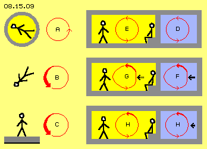
Unten auf dem Erdboden ist Gravitationswirkung gegeben, aber sie ist keine Anziehung und es ist real auch kein Angedrückt-Werden. Vielmehr schwingt der Äther in Erdnähe auf Bahnen-mit-Abwärts-Schlag, was bei C durch den dicken Pfeil repräsentiert wird. Auch alle lokale Wirbel sind entsprechend beaufschlagt, das Schwingen der Atome ist ´deformiert´ (im Gegensatz zu obigem neutralen Zustand bei A). Diese Atome sind Wirbelsysteme mit einem abwärts gerichteten Impuls. Die Wirbelstruktur will nicht ortsfest bleiben, sondern von-sich-aus weiter voran kommen, hier nach unten). Nur darum ´fällt der Apfel vom Baum´. Wenn die Unterlage nicht mehr nachgibt (grau, bei C), wird dieses immanente Abwärts-Schlagen als Schwere empfunden.
Schwerelosigkeit (wie draußen der Astronaut) kann jeder für kurze Zeit erleben durch freies Fallen (wie bei B skizziert ist). Es findet Beschleunigung statt und zunehmend schnellere Geschwindigkeit wird erreicht. Davon spürt man nichts, man fühlt sich geradezu ´kräftefrei´. Die ´deformierten´ Atome des Körpers bewegen sich mehr und mehr konform zur Gravitations-Deformation allen Äthers. Diesen Genuss äther-konformer Bewegung suchen Bungee-Jumper (unter anderem) - und erfahren anschließend die Gewalt der Verzögerung (gegen die Trägheit gegebener Ätherbewegungen).
Transport rein mechanisch
In diesem Bild 08.15.09 rechts ist ein Beschleunigungsprozess in horizontaler Richtung dargestellt (ohne Beachtung der Gravitation), wozu schematisch ein Fahrzeug (grau) gezeichnet ist. Rechts oben ist die neutrale Ausgangssituation skizziert. Sowohl die Atome im Motorraum (D, blau) wie im Fahrgastraum (E, gelb) sind kräftefrei, repräsentiert durch Schwingen auf Kreisbahnen.
Beim Anfahren entwickelt der Motor einen Schub (siehe schwarzer Pfeil) und alle mit dem Motor fest verbunden Atome (F) werden damit nach links beschleunigt, mit einiger Verzögerung auch die ´lose´ im Fahrgastraum (G) befindlichen. All diesen Ätherwirbeln wird ein Vorwärts-Impuls aufgeprägt. Anders als bei voriger Gravitation wird dieser Impuls aber rein mechanisch übertragen: die Wirbel werden hinten eingedrückt und dessen Zentrum nach vorn geschoben. Dieser Prozess ist hier vereinfacht dargestellt durch die ´deformierten´ Kreise bei F und G (diese ´Dellen und Beulen´ des Zitterns der Atome und eines Vorwärts-Impulses sind detailliert in Kapitel 08.13., dort bei Bild 08.13.08 rechts dargestellt und im dortigen Abschnitt ´Träge Masse´ beschrieben).
Gegen den Widerstand des ruhenden Äthers wird die Wanderung der Atomwirbel durch den Raum per Krafteinsatz bewirkt. Diese Art von Beschleunigung ist also ´belastend´ für das Material des Fahrzeuges und der Fahrgäste, weil ihre Atom-Wirbel zuerst mechanisch deformiert werden und sie dann auch noch den umgebenden Äther zu entsprechender Bewegung zwingen müssen. Erst wenn die Beschleunigung in eine konstante Geschwindigkeit übergeht, ist weniger Krafteinsatz erforderlich. Da sich Äther tatsächlich wie ein Ideales Gas verhält, können nun alle Ätherwirbel (H) widerstandslos weiter durch den Raum wandern. Allerdings kommen entsprechende Kräfte an der nächsten Haltestelle bei der Verzögerung und erneuter Beschleunigung wieder auf - anders als bei den Ufos.
Mechanik beeinflusst Äther, und umgekehrt
Die gängige Transport-Technik ist verlustreich und damit energie-aufwändig, weil er rein mechanisch betrieben wird und die Ätherbewegungen nicht einbezogen sind. Bei vorigen Betrachtungen zum Blitz wurde erkannt, dass hohe Vorwärts-Bewegungen von Wirbeln innerhalb ´aetherischer Gleitbahnen´ zustande kommen und beim Sonnenwind werden auch materielle Partikel ungewöhnlich schnell transportiert. Rein mechanisch können Ätherbewegungen ebenfalls beschleunigend genutzt werden, wie ein Beispiel rotierender Masse zeigt.
Wenn die Drehzahl einer (Stahl-) Scheibe z.B. von 1000 auf 2000 Umdrehungen je Minute beschleunigt wird, ist ein gewisser Energieeinsatz erforderlich. Wenn etwas später die Drehzahl wieder auf 1000 abgefallen ist (oder abgebremst wurde) und anschließend erneut auf 2000 U/min beschleunigt wird, ist weniger Energieaufwand notwendig. Dieser Vorgang kann wiederholt werden und erfordert immer weniger Beschleunigungs-Aufwand (plus erhöhter Bremskraft, die nutzbar ist). Wenn an einem Ort längere Zeit die Ätherwirbel von Atomen sich immer gleichförmig bewegen, nimmt der dortige Freie Äther adäquate Bewegungsform an und es wird allem dortigen Äther diese Vorwärts-Komponente im Drehsinn aufgeprägt.
Ähnlich wie bei den Ausgleichskegeln (zwischen grobem und feinem Schwingen, hier grün gezeichnet in vielen Bildern) weitet sich dieses mit der Stahlscheibe rotierende ´Äther-Schlagen´ nach beiden Seiten kegelförmig aus. Dieser Ätherkegel ist sehr viel weiter als der Scheiben-Durchmesser und reicht vielfach weiter beidseits entlang der Achse. Es dauert durchaus einige Zeit, bis dieser große Wirbel in sich stabil ist. Er hat keine exakte Grenzfläche, aber auf dem gesamten Doppelkegel lastet von außen der normale Ätherdruck aus der weiten Umgebung. Es bildet sich praktisch eine ´Hülle´ um diesen Kegel. Die darin eingebetteten Ätherbewegungen können durch den Außendruck nicht mehr einfach zusammen gedrückt werden - bzw. dieser ´statische´ Druck führt automatisch zu erhöhtem ´kinetischen´ Druck. Wie bei einem Wirbelsturm wird dabei die Bewegung im Drehsinn intensiviert (siehe dazu unten den Abschnitt ´Äther-Motor´).
Es ist also durchaus möglich mit rein mechanischer Bewegung einen weiten Bereich umgebenden Äthers zu beeinflussen. Umgekehrt werden dann durch weiträumig geordnete Ätherbewegungen durchaus auch die Wirbel materieller Partikel in entsprechender Bewegung gefördert, hier also beschleunigt im Drehsinn. Bei Ufos - und damit zurück zu vorigem Thema - wird der Äther noch konsequenter manipuliert.
Gravitationsfeld der Ufos
In Bild 08.15.10 ist oben links bei A symbolisch dargestellt, wie Ufos im Raum manövrieren: es wird zuerst ein eigenes ´Gravitations´-Feld gebildet, indem das Schwingen eines lokalen Äthergebietes (hell-rot) auf eine Bahn-mit-Schlag (dunkelroter Pfeil) gebracht wird. Das Schlagen weist in Richtung der gewünschten Flugbahn (hier nach links). Wie bei der irdischen Gravitation werden alle Wirbelkomplexe (der Atome des Ufos und der Besatzung) innerhalb dieses Gebietes (das Innere einer Protektions-Hülle) automatisch mit dieser Überlagerung beaufschlagt.
Wie beim freien Fallen werden damit auch materielle Objekte in der Flugrichtung beschleunigt. Für die Objekte selbst erscheint die Beschleunigung ´kräftefrei´, weil parallel zum Schlagen des Äthers auch diese Wirbel im gleichen Moment in gleicher Weise die überlagerte, schlagende Bewegung ausführen. Das freie Fallen in der irdischen Gravitation wird beendet an der Erdoberfläche. Das freie Fallen des Ufos aber ist himmelwärts nicht begrenzt. Mit jedem Schlag wandert die gesamte Wirbelstruktur im Raum etwas vorwärts. Dabei wird die Vorderseite der Protektions-Hülle nach vorn geschoben und synchron deren Inhalt, also das Ufo selbst mit all seinen Bestandteilen und inklusiv seiner Besatzung (und natürlich rücken auch die seitlichen und hinteren Flächen der gesamten Hülle entsprechend nach).
Im Gegensatz zu unserer gängigen Transport-Technik wird hier kein Schub auf materielle Teile ausgeübt (durch Druck und entsprechenden Gegen-Druck), die sich dann durch den Äther vorwärts drängen müssen. Es wird vielmehr zuerst eine ´Ätherströmung´ generiert, in welcher auch materielle Partikel mit-schwimmen (wobei ´Strömung´ wie immer nur der Eindruck ist, welcher sich real aus Schwingen auf Bahnen-mit-Schlag ergibt). Das Ufo und seine Besatzung lassen sich einfach nur von diesem Schlagen vorwärts treiben und weil alle Atom-Wirbelchen analog dazu schwingen, stellt die Beschleunigung keinerlei Belastung für das Fahrzeug und seine Insassen dar - selbst wenn abrupt die Richtung gewechselt wird.
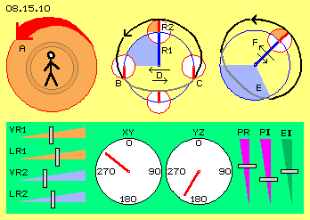
Steuerung des Ufos
In diesem Bild oben mittig ist noch einmal skizziert, wie sich eine Bahn-mit-Schlag aus der Überlagerung von zwei Kreisbewegungen ergeben kann. Eine erste Drehung erfolgt mit Radius R1 und am Ende des Zeigers (blau) ist der Drehpunkt einer zweiten Drehung mit Radius R2. Am Ende des zweiten Zeigers ist der beobachtete Ätherpunkt (und wie immer schwingen benachbarte Ätherpunkte parallel dazu um ihre eigenen Drehpunkte, so dass flächiges Schwingen gegeben ist bzw. der ganze betroffene Raum analog schwingt). Beide Drehungen erfolgen in gleichem Drehsinn (hier linksdrehend) und mit gleicher Drehgeschwindigkeit (hier markiert durch 90-Grad-Sektoren, hellblau und hellrot).
Der Drehbereich des R1-Zeigers ist markiert durch den blauen Kreis. Der Drehbereich (weiß) des R2-Zeigers ist in vier Positionen eingezeichnet (die zeitlich nacheinander eingenommen werden): oben bilden R1 und R2 eine gestreckte Linie, links weist R2 vorwärts im generellen Drehsinn, unten weist er einwärts, rechts weist er rückwärts im generellen Drehsinn. Der Ätherpunkt beschreibt eine ovale Bahn, die hier als graue bzw. schwarze Kurve eingezeichnet ist. Während einer Hälfte der Zeit bewegt sich der Ätherpunkt auf der kurzen Strecke von B nach C. Während der zweiten Zeit-Hälfte legt der Ätherpunkt den weiten Weg von C nach B zurück.
Gleichbedeutend ist die Aussage, dass die eine Hälfte des Weges während eines langen Zeitabschnittes (also langsam) erfolgt, während die zweite Hälfte des Weges binnen kürzerer Zeit (und damit schneller) durchlaufen wird. Dieser Sachverhalt ist bei D durch die beiden unterschiedlich langen Pfeile dargestellt. Daraus also ergibt sich das Schlagen in eine bestimmte Richtung. Die Relation der Länge von R1 und R2 bestimmt die Form der Oval-Bahn bzw. die Intensität des Schlagens (das hier stark überzeichnet ist, real wird R2 sehr klein sein, die Oval-Bahn also nur geringfügig von einer Kreisbahn abweichen).
Sobald die Winkelgeschwindigkeit beider Drehungen nicht mehr genau gleich sind, ergeben sich Rosetten-Bahnen, vor- oder auch rückdrehend. Um einen Wechsel der Schlag-Richtung zu erreichen, muss nur für kurze Zeit und nur geringfügig die Drehzahl eines Radius variiert werden. Oben rechts bei E ist der blaue Sektor etwas größer gezeichnet, d.h. R1 dreht schneller. Dann ergibt sich die gestreckte Position mit R2 schon etwas früher, hier schon oben-rechts. Durch diese minimale Korrektur weist das Schlagen nun diagonal links aufwärts, wie die Pfeile bei F anzeigen. Eine Richtungsänderung kann auch durch Verzögerung oder Veränderung der Radius-Längen erreicht werden, also mit minimalem Aufwand.
Da aller Äther lückenlos zusammenhängend ist (bzw. nur weil Äther nicht aus Teilchen besteht), müssen auch alle Nachbarn umgehend die neue Aufprägung ihres Schwingens übernehmen. Blitzschnell fliegt damit das Ufo inklusiv Besatzung in eine neue Richtung - noch immer ´kräftefrei´ bzw. ohne Belastung von ´Material und Mensch´. Ich weiß nicht, ob in Science-Fiction-Filmen viel über Äther diskutiert wird. SF-Fans aber kennen sich aus mit Control-Panels oder könnten lässig ein Raumschiff durch alle Gefahren hindurch manövrieren. Unten in diesem Bild habe ich (spaßhalber) ein paar Steuer-Elemente skizziert, die dafür notwendig sein könnten.
Für die manuelle Steuerung könnten Schieberegler dienen, mit denen die Geschwindigkeit V oder Länge L der überlagerten Dreh-Radien R1 und R2 zu justieren sind. Gewiss wird es Anzeigen über die momentane Flugrichtung in der XY- sowie YZ-Ebene des Raumes geben. Die Länge der Zeiger könnten die Geschwindigkeit anzeigen (was auch zu kombinieren wäre z.B. in einer Glas-Kugel). Eine neue Richtung relativ zum Standort und Beschleunigung bzw. gewünschte Geschwindigkeit könnten auch per Touch-Screen einzugeben sein. Regler zum Protektor-Radius PR und dessen Intensität PI müssten vorhanden sein. Und letztlich müsste auch der Energie-Input EI zu regeln sein - weil der Äther zwar leicht manipulierbar ist, aber auch ein Ufo über eine Energie-Quelle verfügen muss.
Energie-Quelle und -Fluss
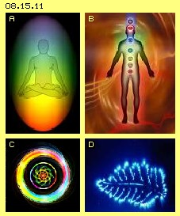
Unsere gängigen Vorstellungen zur Energie sind vermutlich sehr einseitig: ohne Sprit im Tank fährt kein Auto, ohne Nahrung und deren ´Verbrennung´ funktioniert kein Mensch. Nach Chinesischer Weltanschauung sind ganz andere Kräfte entscheidend, fließt z.B. im Menschen eine Energie auf vielfältigen Bahnen. Krankheiten sind danach nur die Symptome gestörten Energieflusses und seltsamerweise lässt sich z.B. ein Energiestau auflösen per Akupunktur - wobei diese Nadeln möglicherweise wie Antennen wirken. Es soll sogar Menschen geben, die nur mittels ´Lichtnahrung´ ausreichend Lebensenergie (siehe auch obiges Orgon) aufnehmen können.
Spätestens aufgrund der Kirlian-Fotographien (siehe Bild 08.15.11 bei D) konnte man erkennen, dass Lebewesen eine ´Energie´ ausstrahlen (bei Menschen besonders durch die Hände). Auch im Westen gibt es Redewendungen wie: jemand strotzt vor Energie, strahlt über das ganze Gesicht, hat eine positive Ausstrahlung, ist offen oder auch in sich gekehrt, verschlossen oder kraftlos - und dabei ist keinesfalls nur seine physische Kondition gemeint. In Indien (und vielerorts) ging man schon immer davon aus, dass Menschen (und alle Lebewesen) außer einem materiellen Körper einen vielschichtigen Astral- oder Mental-Körper haben. Es gibt unendlich viel Literatur zu diesem Thema (die hier nicht diskutiert wird). Für manche soll diese Aura sogar sichtbar sein, aber es ist natürlich sehr schwierig diese Erscheinungen zu beschreiben oder bildhaft zu vermitteln (siehe A).
Ziemlich einig ist man in dieser Weltanschauung, dass die Aura eines Menschen eine schützende Hülle darstellt, aber auch die Kommunikation mit der Außenwelt ermöglicht (weit über die sechs Sinne hinaus) und nicht zuletzt die Aufnahme bzw. den Austausch von Energien ermöglicht. Dazu sind vorzugsweise sieben ´Chakras´ zuständig, jedes mit besonderer Funktion (siehe B). Der materielle Körper ist eingebettet in vielfältigem Wirbeln und durch die Chakras strömen diverse ´Lebenskräfte´ hinein. Auch darauf möchte ich nicht eingehen, für mich ist vielmehr ´phänomenal´, wie dieser Prozess bildhaft meist dargestellt ist: generell als ein spiraliger Wirbel, der bei jedem Chakra von einem individuellen, farbigen Muster (siehe C) umgeben ist.
Energie-Filter
Mit den Begriffen der Esoterik (oder alter Spiritualität) werden Wirbel und Strömungen beschrieben in vielen Frequenzen (oder Farben) eines irgendwie imaginären Mediums. Aus meiner Sicht gibt es nichts Imaginäres, sondern den realen Äther und all seine Bewegungen haben reale Wirkungen. Allerdings rotiert dieser Äther nicht und strömt auch nicht, wohl aber gibt es unendlich viele Formen von Schwingungsmustern und die Wirbelkomplexe können sehr wohl durch den Raum wandern. Also muss auch das Geschehen in einem Astralkörper auf realen Bewegungen im Äther beruhen. Gerade zu diesem Spiral-Kern obiger Chakras habe ich ähnliche Bilder gezeichnet - Rosettenbahnen, wie in Bild 08.15.12 bei A in drei Versionen noch einmal skizziert ist.
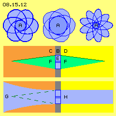
Eine ovale Bahn kommt zustande durch Überlagerung zweier Kreisbewegungen. Ein asymmetrisches Oval muss eine dritte Überlagerung aufweisen. Wenn diese Bahn um einen Fokus wandern soll, muss eine vierte Drehung gegeben sein. Je nach Länge der Radien und der Geschwindigkeit dieser Drehungen ergeben sich unterschiedliche Muster: ein kleiner oder großer Fokus (hier dunkelblau), schmale oder breite Ovale (hellblau), mehr oder weniger vorwärts- oder auch rückwärts drehend. Wie immer müssen sich dabei benachbarte Ätherpunkte analog verhalten, so dass ein flächiges (und natürlich auch räumliches) Schwingen zustande kommt - so wie die Aura insgesamt ein schwingendes Gebilde ist und wie speziell die Bewegungsmuster der Chakras sind.
Die Aura eines Menschen bildet eine Hülle, also eine Wand (im Querschnitt ist hier jeweils ein Abschnitt davon grau markiert). Diese Wand B grenzt die Außenwelt (C, rot) gegenüber der Innenwelt (D, gelb) ab. Diese Wand kann aus mehreren Schichten bestehen, jeweils mit anderem komplexen Bewegungsmuster, so dass der Innenraum komplett abgeschirmt ist gegenüber externen Störungen. In der Wand können aber auch Bereiche eines ´klaren´ Musters eingefügt sein, z.B. Bewegung eines Rosettenmusters, wie in diesem Querschnitt bei E (blau) schematisch skizziert ist.
Das relativ weiträumige Schwingen dieser Rosette muss auf kleinere Radien reduziert werden, so dass zum Freien Äther hin (links, rot) ein Ausgleichskegel (F, grün) erforderlich ist. Auch in den Innenraum (rechts, gelb) hinein wird entsprechend ein Kegel gegeben sein, welcher zwischen den Bewegungen der Rosette und der im Innenraum vermittelt. Von außen liegt der generelle Ätherdruck an, welcher diese lokale grobe Bewegung der Rosette zusammen drücken will. Wenn von innen gleicher Gegendruck anliegt, wird das Schwingen der Rosette stabil in dieser Wand ´stehen´ - praktisch wie ein Fenster.
Das Schwingen Freien Äthers kommt zustande aus der Überlagerung unendlich vieler Bewegungen, z.B. aufgrund Strahlung aus allen Richtungen des Alls. In Teil ´02. Universelle Ätherbewegungen´ ging ich davon aus, dass diese auch form-gebende Funktion hätten (wie bei Global Scaling oder Sheldrakes ´morphischen Feldern´), was sich aber auch anders ergeben kann (wie etwas später dargestellt wird). Bewegungskomponenten im Freien Äther, die nicht zum Muster des Rosetten-Fensters adäquat sind, üben den allgemeinen Ätherdruck aus (hier repräsentiert durch grüne Ausgleichskegel).
Natürlich gibt es im vielfältigen Schwingen Freien Äthers aber auch Bewegungen, die zumindest teilweise adäquat sind zum Schwingen der Rosette. Dieser Bewegungsanteil G ist in diesem Bild unten links hellblau markiert. Für diese Bewegungen stellt das Rosettenfenster kein Hemmnis dar, vielmehr wird dadurch dieses Schwingungsmuster verstärkt. Diese Wirbel (H, hellblau) können ungehindert in den Innenbereich hinein wandern, so dass innerhalb der Trennwand nun dieses Bewegungsmuster dominant werden kann.
Es ergibt sich damit wiederum eine Parallele zur Fluid-Technologie: die normale molekulare Bewegung von Gaspartikeln stellt eine enorme Menge kinetischer Energie dar, die allerdings aufgrund chaotisch verteilter Vektoren nicht nutzbar ist. Erst durch Ordnung (dort mit wenig Aufwand per Sog zu organisieren) ergibt sich strukturierte Bewegung, die für irgend einen Zweck nutzbar wird. Analog dazu stellt das Schwingen Freien Äthers ein praktisch unbegrenztes Energie-Potential dar. Solange sich aber alle Bewegungen in chaotischer Weise überlagern, ist keine Nutzung möglich (bzw. ergibt sich nur der allgemeine Ätherdruck). Die geordneten Rosetten-Bewegungen in einer aetherischen Trennwand haben die ordnende Funktion eines Filters, indem sie nur für adäquate Bewegungskomponenten durchlässig sind. Damit kann der aetherische Körper über die Chakras ausgewählte Schwingungsformen aufnehmen und ´Lebensenergie´ unterschiedlicher Art akkumulieren - was nebenbei auch dem materiellen Körper zugute kommt.
Zumachen oder Zulassen
Es wird dabei also nicht Energie von einer Form in eine andere transformiert (wie bei gängiger Technik), sondern es wird nur zugelassen, dass eine bestimmte Schwingung (und damit Energie) in ein Objekt (Mensch, Tier, Pflanze oder Ufo) eintreten kann. Die Chakras erledigen das im Normalfall autonom, aber jeder Mensch kann diesen Prozess auch willentlich auslösen. Eine automatische Reaktion tritt z.B. auf, wenn Gefahr droht oder man erschreckt wird: der Mentalkörper macht zu und zieht sich zusammen - was man durchaus körperlich wahrnimmt (nicht nur durch das Zittern aufgrund überreizter Nerven). Genauso öffnet sich der Mentalkörper umgehend, wenn man durch ein freudiges Ereignis überrascht wird (nur wirkliche Pessimisten bleiben ´echt-cool´).
Bewusst kann man sich der Schönheit einer Landschaft oder den Pflanzen seines Gartens gewahr werden, sein Interesse und Wohlwollen einem Tier oder gar einem Menschen zuwenden - und ´Glück´ empfinden (wobei Hirnforscher glücklich sind, wenn passende Botenstoffe nachzuweisen und verstärkte Gehirn-Aktivitäten zu messen sind). Real öffnen sich beidseits ´Fenster´ (in obigem Sinne) und bildet sich dazwischen ein ´Kanal´ (im Sinne obiger Röhren) zum Austausch harmonischer Schwingungen. Die Kanalhülle wird natürlich wieder vom allgemeinen Ätherdruck zusammen gehalten - und auf der ganzen Wegstrecke tritt wiederum eine Verstärkung ein durch alle Schwingungskomponenten des Freien Äthers, die adäquat dazu sind. Dieses ´Einsaugen´ von Lebenskraft (und es ist nicht nur übliches Einatmen gemeint) beruht auf Gegenseitigkeit - aber gerade Pflanzen und Tiere (aber auch ´tote´ Materie bei richtigem Verständnis) sind äußerst freigiebig. Andererseits kann man leicht ´Lebenskraft tanken´, wo ohnehin viel ´Orgon in der Luft hängt´.
Diese Prozesse sind nicht Funktionen des materiellen Körpers, sind vielmehr ´mentale´ Vorgänge der Astralkörper. Der biologische Körper profitiert dabei nur indirekt, z.B. indem alle Zellen ebensolche aetherische Membranen und solche Fenster aufweisen. Sie kommunizieren über ´Licht´, aber nicht im Sinne elektromagnetischer Wellen, sondern eben über Ätherschwingungen. Unsere Vorstellungen von Nahrungs-Aufnahme und Energie-Umsetzung treffen nur teilweise zu, können ´Leben´ nicht beschreiben. Tatsächlich findet Leben essentiell im ´Aetherischen´ statt und wird tatsächlich durch Gefühle gesteuert - was naturwissenschaftlich nicht messbar ist und somit ausgeklammert wird.
Das mag für viele Leser gar zu viel sein: nach gängigem Verständnis gibt es keinen Äther. Hier wird behauptet, dieser Äther müsse lückenlos sein, damit z.B. aetherische Wände so steif im Raum stehen können. Aus Wänden werden runde Hüllen gebildet, ohne Verwendung gängiger Materie. In den Hüllen sind Filter eingebaut zum Einlass von Energie, gesteuert durch Gefühle eines Mentalkörpers. Dabei wird Äther außerhalb wie innerhalb von Lebewesen manipuliert, zugunsten des Lebens-an-sich.
Aber auch gängige Technik manipuliert Äther (wenngleich unbewusst): man handhabt elektrische und magnetische Felder in unterschiedlichen Maschinen für unterschiedliche Zwecke. Man sendet Radiowellen aus, die sich vielfach überlagern im Raum (und produziert damit die wahre Klimakatastrophe in Form von Elektrosmog), im Empfänger wird eine Trägerwelle ausgewählt und eliminiert, so dass die aufgeprägten Informationen heraus gefiltert und letztlich verstärkt werden.
Die Verfahren weisen nur zwei prinzipielle Unterschiede auf: die Technik benutzt elektrische Ladung bzw. schnell fließenden Strom entlang von Leitern (gegebenenfalls gesteuert per Halbleiter) oder man nutzt die mit Lichtgeschwindigkeit dahin rasenden elektromagnetischen Wellen. Lebewesen nutzen Ätherschwingungen, die prinzipiell ortsfest sind, aber auch durch den Raum wandern können. Die Schwingungsmuster sind extrem vielfältig, sie können gefiltert und verstärkt werden - alles ohne Zuhilfenahme materieller Teilchen. Diese ´mentale Welt´ ist aber ebenso real wie die materielle Welt. Zumindest bei Lebewesen wird sogar die Anordnung materieller Teilchen und deren organische Funktion vom Mental-Körper gesteuert (siehe unten).
Da Ufos offensichtlich nicht unsere materie-abhängigen Techniken benutzen, haben sie vermutlich sehr viel bessere Kenntnis über mentale Prozesse (wie sich bei Nah-Begegnungen oft zeigte - worin aber z.B. auch die Piloten von Vimanas im alten Indien vor vielen tausend Jahren geschult wurden). Sie müssen hervorragende Kenntnisse über die Eigenschaften des grundlegenden Mediums haben und über viele Möglichkeiten zur Manipulation der Ätherbewegungen verfügen. Aus welchem Material werden also ihre Raumschiffe gebaut sein?
Alien-Material
Für mich sind ´Phänomene´ die Ansatzpunkte für neue Antworten, z.B. absurde Aussagen, die sich ein ´normaler Mensch´ in Stress-Situationen nicht einfach so mal ausdenken kann. Beim Roswell-Crash sollen einige Leute Wrackteile aufgesammelt haben und das Material war leicht, aber zugleich hart und zäh, man konnte es nicht schneiden aber verbiegen, wonach es wieder seine ursprüngliche Form annahm. Klar, dass offizielle Stellen jeden Fetzen davon mitnahmen. Bei Begegnungen mit ´Bio-Automaten´ berichten praktisch alle Zeugen, dass deren ´Kleidung´ ein nahtloses Ganzes sei. Bei freiwilligen oder unfreiwilligen Besuchen in einem Raumschiff waren alle erstaunt, dass die Wände und Einrichtungen nahtlos und gerundet waren, dass keine Lichtquelle erkennbar, aber alles ´von innen heraus hell´ war.
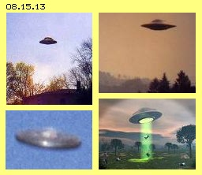
Das Material der Ufos kann nicht aus normalen Atomen aufgebaut sein, es besteht nicht aus materiellen Teilchen - sondern aus purem Äther. Die Aliens sind offensichtlich in der Lage, ´aetherische Wände´ zu bilden. Sie bestehen aus mehreren Schichten komplexer Schwingungen, die ´endlos´ weiter laufen können in runden Formen, also in sich geschlossene Flächen bilden (wie oben bzw. im vorigen Kapitel beschrieben). Alles im Raumschiff könnte aus solchem ´Kunststoff´ bestehen, der gewiss auch unterschiedliche Material-Eigenschaften aufweisen wird. Andererseits erscheinen zumindest die ´Chefs´ in einem normalen menschlichen Körper. Die Besatzungen sind auch an biologischen Substanzen interessiert, die sie den Entführungsopfern entnehmen oder sie setzen diesen materielle Implantate ein. Neben rein aetherischem Alien-Material dürften in Ufos also auch chemische Elemente, Moleküle und organische Substanzen vorhanden sein.
Solid Light
Eine andere, völlig absurde Aussage von Augenzeugen betrifft die ´Solid-Lights´ (siehe Foto in Bild 08.15.08 und Graphik in Bild 08.15.13, jeweils unten rechts). Von den Ufos gehen zylindrische Lichtsäulen aus, die allerdings nicht wie normale Lichtstrahlung schlagartig bis zum Boden reichen. Vielmehr dehnen sie sich langsam aus, haben endliche Länge und können auch gekrümmt sein. Mit diesen Lichtsäulen können technische Einrichtungen (wie Autos) beeinträchtigt, Menschen zeitweilig gelähmt und psychisch beeinflusst werden. Unglaublich - aber vielfach berichtet von unfreiwillig Entführten und Augenzeugen - können Menschen oder Tiere levitiert und in das Raumschiff geholt werden durch diese Röhren hindurch.
Diese Vorgänge sind nach dem Stand unserer Naturwissenschaften schlicht unbegreiflich. Ich kann nur darauf verweisen, dass aetherische Wände zu Röhren geformt sein können (hier wird zuerst ein Boden gebildet, der anschließend nach unten geführt wird, indem das darauf stehende Rohr verlängert wird). Die Rohrwand grenzt die Umgebung ab und im Rohr kann eine ´eigene Welt´ spezieller Bewegungsmuster aufgebaut werden. Dieses kann Einfluss auf Elektrik haben, auf das Nervensystem von Menschen und ´natürlich´ kann darin auch ein Schwingen auf Bahnen-mit-Schlag organisiert werden, das ´Levitation´ bewirkt.
Wie Aliens das konkret zustande bringen, ist eine offene Frage. Dass sie es können, zeigt wie viel wir noch dazu lernen können - in der Handhabung von Realität. Auf jeden Fall brauchen Sie dazu kein ´schweres Gerät´. Sie drücken, schieben oder ziehen keine Atome und materielle Körper per mechanischer Kraft oder uns bekannten physischen Energien. Sie manipulieren die Ätherschwingungen auf direktem Wege - beispielsweise rein mental, prägen gegebenem Ätherschwingen ein zweckdienliches Muster auf, lokal begrenzt, durch rein mentale Kräfte - wäre denkbar (siehe unten).
Feuerbälle
Total absurd sind Aussagen von Augenzeugen, dass Ufos ihre Form wechseln, sich teilen und wieder vereinigen können, Licht-Kugeln austreten, herum fliegen und wieder in das Ufo zurück kehren. Solche Geschichten wären völlig unglaublich - wenn Aliens diese Show nicht schon des öfteren vor hunderten Zuschauern abgezogen hätten. Diese Ufos bzw. ihre Teile können nicht aus normaler Materie gebaut sein, wenn sie aber ´nur´ aus Äther-Hüllen bestehen, sind solche Prozesse absolut möglich.
Besonders häufig werden Feuerbälle gesichtet (oft auch ´Foofighter´ genannt), z.B. auch über Kornfeldern, wobei binnen Sekunden komplexe Kornkreisbilder entstehen. Gewiss gibt es viele Fälschungen, aber bei den echten Kornkreisen sind z.B. die Halme nicht geknickt, sondern gekrümmt an einem Knoten. Es ist völlig offen, wie die echten Kornkreis-Produzenten das bewerkstelligen. Ich vermute so ähnlich wie ´Löffelbiegen´ - das in Seminaren binnen weniger Stunden acht von zehn Menschen beherrschen (wo man nur lernen und akzeptieren muss, wie mächtig unsere mentale Fähigkeit ist und selbstverständlich auch Materielles beeinflussen kann, siehe unten). Wenn normale Menschen hartes Metall biegen können durch ´rein geistige´ Beeinflussung - darf man Alien zutrauen auch Gras-Halme in großer Zahl zu eindrucksvollen Mustern zu formen (während wir uns schwer tun, die vermittelten Botschaften zu entschlüsseln).
Zoom-Faktoren
Im Kapitel 08.13. wurde das Äther-Modell der Atome diskutiert. ´Phänomenal´ dabei ist, dass alle Atome fast gleiches Volumen haben und die Spannbreite der Masse (Komplexität der Wirbelmuster) nur etwa 1 : 200 ist. Die räumliche Ausdehnung in anderen Bereichen umfasst viele Zehnerpotenzen, z.B. bei der Relation von Erde / Sonne, Sonne / Sonnensystem, Sonnensystem / Milchstrasse - und Galaxien sind wiederum nur einsame Staubkörner im weiten All. Auch die Frequenzen elektromagnetischer Wellen haben Bandbreiten über viele Potenzen hinweg. Wir nutzen davon nur kleine Ausschnitte, z.B. beim Radio- und Funkverkehr. Die gleiche Information können wir dort z.B. über Lang-, Mittel-, Kurz- oder Ultrakurzwelle übertragen.
Insofern ist wirklich phänomenal, dass unsere materielle Welt auf Partikeln basiert, die hinsichtlich Volumen und Wirbelmustern eine so geringe Variationsbreite aufweisen. Es ist geradezu zwingend, dass parallel dazu andere Bandbreiten für ähnliche Erscheinungen vorhanden sein müssen. Unsere Atome bzw. deren Wirbelkomplexe werden zusammen gehalten durch den allgemeinen Ätherdruck. Dieser ergibt sich aus dem feinen Schwingen des Freien Äthers. In diesem ist eine ´unendliche´ Spannbreite von Schwingungen möglich. Daraus kann nur ein entsprechend schmales Band mit dem Grobstofflichen unserer Atome interagieren. Der Ätherdruck auf atomare Wirbelkomplexe wird also nur von einem ähnlich ´grobem´ Band allen Schwingens ausgeübt. Tausendfach engeres Schwingen läuft durch einen groben Wirbelkomplex einfach hindurch, tausendfach langsameres Schwingen schiebt ihn nur etwas hin und her.
Wir sollten den Ufo-Besatzungen unterstellen, dass sie um ihr Raumschiff herum einen ´Schutzschild´ aus reinem Äther bilden können (und naive Ballermänner sind erstaunt, dass ihre Geschosse wirkungslos bleiben). Innerhalb dieser Hülle besteht eine eigene Welt, in welcher z.B. das Schwingen so beaufschlagt ist, dass ein eigenes ´Gravitationsfeld´ gegeben ist. Wir dürfen auch unterstellen, dass sie Ätherschwingungen heraus filtern können, um für ihre Zwecke nutzbare Energie zu erreichen (vermutlich die ´Lichter´ mit wechselnden Farben, teilweise auch umlaufend). Wir sollten den Aliens dann auch zutrauen, dass sie das Schwingen einer Bandbreite manipulieren können (in grobem Vergleich also wie wir (Radio-) Frequenzen und Amplituden variieren können).
Wenn sie innerhalb der Schutz-Hülle die Schwingungen dämpfen, können sich alle Wirbel (der aetherischen Wände oder auch der Atome) ausdehnen. Die Konturen verschwimmen und das Ufo verschwindet in einer Wolke (oder analog dazu kann es aus einer Wolke unvermittelt ´auftauchen´). Darum gibt es kaum gute Fotos von Ufos (und die scharfen Bilder sind meist manipuliert). Wenn dagegen innerhalb der Schutzhülle die groben Anteile des Freien Äthers sukzessiv heraus gefiltert werden, erhöht sich der Druck auf Wirbelkomplexe und sie werden auf kleineres Volumen reduziert. Das ganze Raumschiff (und manche sollen Kilometer groß sein) schrumpft zusammen. Oft wird berichtet, dass ein Ufo binnen Sekunden zu einem ´Feuerball´ zusammen schrumpft und zugleich mit unvorstellbarer Geschwindigkeit in den Himmel schießt.
Letzteres dürfte logisch sein: je kleiner der Wirbelkomplex, desto weniger sperrig ist er (hat weniger Masse), desto weniger Äthervolumen ist bei seinem Flug involviert, desto schneller kann er fliegen (wie das Neutrino, die Mini-Ausgabe eines Photons, sich mit Über-Lichtgeschwindigkeit bewegen soll). Das Phänomenale an diesen Zoom-Prozessen jedoch ist, dass der ´Informationsgehalt´ identisch ist, egal ob die Wirbelsysteme auf große Bereiche ´ausgedünnt´ sind oder auf engen Raum herunter gebrochen wurden (siehe obiges Beispiel einer Sendung auf unterschiedlichen Frequenzen). Insofern ist nicht verwunderlich, dass auch die kleinen Feuerbälle unglaubliche Leistungen hervor bringen können: sie verfügen über die gleiche ´Funktionalität´ wie ihr riesiges Ufo-Mutterschiff.
Galaktische Reisen
Es wird bezweifelt, dass Aliens aus fernen Sternsystemen stammen könnten, die Lichtjahre entfernt sind. Es scheint auch unsinnig, warum so viele ´galaktische Touristen´ unterwegs sein sollten, wie die täglichen Sichtungen rund um den Globus vermuten lassen. Der vorige kleine Feuerball kann gewiss schnell durchs All fliegen, aber selbst für ´geschrumpfte Genossen oder Götter´ wäre die Reise doch ziemlich langweilig.
Es gibt die Blitz-Röhren mit ihrer besonderen Gleitfähigkeit. Es gibt die Sonnenwind-Röhren zu allen Planeten, auf denen sogar materielle Partikel schnell transportiert werden. Solche Röhren wird es gewiss auch zwischen Sonnen geben. Diese Röhren könnten von den Aliens über Jahre so präpariert (oder eigenständige Röhren errichtet) werden, dass ein voll funktionsfähiger Feuerball in kurzer Zeit durch diesen Kanal reisen könnte.
Es ist aber höchst fraglich, ob die theoretisch ermittelten Distanzen im Weltall zutreffend sind. Garantiert falsch ist die Annahme, dass die auf der Erde gemessene Gravitation eine Konstante im ganzen Universum sein soll (weil selbst hier an unterschiedlichen Orten und Zeitpunkten immer andere Werte gemessen werden). Die Rotverschiebung des Lichts wird generell auf den Doppler-Effekt zurück geführt, könnte aber ganz andere Ursache haben (und damit steht und fällt die vermeintliche Expansion des Universums). Die Lichtgeschwindigkeit wird als konstant unterstellt, obwohl sie in unterschiedlichen Medien stark variiert (in Glas oder Wasser z.B. um ein Drittel langsamer, siehe Kapitel 04.03 Lichtäther). Aber auch im Umfeld der Erde ist das Äther-Medium ´verschmutzt´, mindestens bis zu den ´Grenzen´ der Schwerelosigkeit und des irdischen Magnetfeldes. Die gängigen Berechnungen sind mit großer Wahrscheinlichkeit falsch, das Universum könnte also auch sehr viel kleiner und somit die Distanz für Reisen sehr viel kürzer sein.
Das Reisen könnte aber auch sehr viel schneller möglich sein. Die Licht-Erscheinungen bei Ufos werden als irgendwie ´unwirklich´ beschrieben, so dass Aliens sehr wahrscheinlich eine andere Kategorie von Licht handhaben (und für dessen Existenz spricht auch einiges andere, siehe unten). Unsere Erfahrungswelt ist zu messen per Einheiten von 1,0 m und 1,0 Sekunden. Viel Längeres oder viel Kürzeres ist eigentlich ´unfassbar´. Beispielsweise sind Photonen für uns ´unvorstellbar kleine Wellen-Teilchen´, aber dennoch wird ´unser´ Licht noch immer grobstofflich sein. Es ist den Aliens zuzutrauen, dass sie eine große Menge von Information und Funktionalität nicht nur auf Fußball-Größe reduzieren, sondern tausend mal kleiner als ein Photon bündeln können. Dann wäre entsprechend weniger Äther involviert und die winzigen Wirbelkomplexe könnten schneller hindurch wandern. Anstelle eines Lichtjahres dauert eine Reise dann weniger als zehn Minuten oder wenn nochmals Faktor tausend drin ist, nur noch fünf Sekunden - unfassbar für uns Grobstoffliche in unserer 1m/1s-Erfahrungswelt.
Materieller Körper und Verstand
In dieser materiellen Welt kommen wir allerdings gut zurecht, schließlich sind wir Menschen (momentan) die dominierende Spezies auf dem Planeten, obwohl unser biologischer Körper keinesfalls optimal konzipiert ist. Dafür besitzen wir ein ´phänomenal´ ausgebildetes Gehirn, das die Nachteile kompensiert. Dort ist die Steuerzentrale und der Verstand koordiniert alle Handlungen, so dass dieser materielle Körper am Leben bleibt. Besser als andere Lebewesen scheint er in der Lage zu sein, die Vorgänge in seinem Umfeld analysieren zu können. Dabei ist die Frage des ´Warum´ entscheidend, weil nur so die Ursache von Unpässlichem zu beseitigen ist bzw. zukünftiges Handeln zweckdienlich zu planen ist.
Der Verstand arbeitet nicht sehr schnell und es ist darum vorteilhaft, eintreffende Informationen nach Merkmalen zu ordnen. Über vorrangige Kategorien wie ´bekannt / neuartig´ oder ´gefährlich / harmlos´ oder ´brauchbar / irrelevant´ können schnell zweckdienliche Reaktionen veranlasst werden. In existenziellen Situationen wartet der biologische Körper allerdings nicht auf die Entscheidungen des Verstands, sondern tut ´instinktiv´ das Notwendige. Der Verstand arbeitet auch keinesfalls fehlerfrei, ist aber klug genug, die meisten lebensnotwendigen Prozesse einem ´tierischen´ Automatismus zu überlassen. Dann hat er genügend ´Leerlaufzeiten´, um ausgiebig über das Warum nachzudenken. In Selbstgesprächen erklärt er sich, warum was wie abgelaufen ist und warum er wann was wie tun wird, pausenlos in endlosen Schleifen - und liegt häufig oder auch prinzipiell ´voll-daneben´.
Realität oder Fiktion
Gehirnforscher versuchen mit allen naturwissenschaftlichen Hilfsmitteln heraus zu finden, wie das Gehirn und die Nerven wirklich funktionieren bzw. welche reale Aktivitäten dort die Arbeit des Verstandes repräsentieren. Dieser Apparat selbst hat von der Realität nur stark gefilterte Kenntnis, bekommt davon nur schmale Ausschnitte der durch die Sinnesorgane erfassten Eindrücke vermittelt. Der Verstand selbst lebt zudem in einer zeitlich versetzten Welt, hinkt prinzipiell mindestens eine halbe Sekunde hinter den realen Vorgängen seiner Umwelt hinterher. In seinem Bemühen zur Ergründung des ´Warum´ bearbeitet er praktisch immer nur die Vergangenheit und mit seinen internen Planspielen bearbeitet er potentielle Situationen in der Zukunft. Insofern lebt der Verstand weitgehend in einer eigenen, fiktiven Welt.
Der Verstand ist fähig, aus ähnlichen Merkmalen einzelner Vorkommnisse sinnvolle Kategorien zu bilden. Dieses Abstrahieren kann aber zum Selbstzweck ausarten, wenn aus abstrakten Begriffen nochmals fiktivere abgeleitetet werden. Diese werden z.B. in mathematische Symbole überführt und Fiktives mit Abstraktem vielfach verknüpft, bis kaum mehr ersichtlich ist, warum das theoretische Ergebnis welchen transzendenten Bezug zur Realität noch haben könnte. Über ´Gut und Böse´ oder ´Gott und die Welt´ lässt sich trefflich philosophieren. Mit Begriffen ohne exakte Definition, also ohne direkten Realitäts-Bezug, lassen sich beliebige Hypothesen aufstellen. Leider kann man auch nahezu alles mathematisch berechnen und beweisen, auch wenn den Ergebnissen erst wieder durch fragwürdige Interpretationen möglicherweise reale Bedeutung zukommen könnte.
Freier Wille und Determinismus
Manchmal erfahren solche Fiktionen einen wahren Schock durch reale Messergebnisse. Beispielsweise wollte man die Geschwindigkeit des Informationsflusses vom Hirn über die Nerven zu einem Muskel ermitteln. Die Probanten sollten dazu einen Finger bewegen, wobei sie den Zeitpunkt nach Belieben wählen konnten. Erstaunlicherweise nahm der Muskel seine Arbeit deutlich früher auf, als der Befehl vom Hirn abgesandt wurde.
Es war bereits bekannt, dass unser Verstand die realen Prozesse nur mit zeitlichem Verzug registriert und sich selbst erklärt was warum gerade abgegangen war. Diese Experimente belegten nun aber, dass der Verstand gar nicht Auslöser für reale Prozesse seines Körpers sein kann. Der Verstand hatte sich wiederum erst mit zeitlichem Verzug eine Erklärung gegeben, warum der Finger sich bewegt hatte: weil er aufgrund freien Willens das beschlossen hätte.
Für die ´Krone der Schöpfung´ ist es sehr beschämend, wenn - trotz aller intellektueller Fähigkeiten - der Verstand nicht einmal zuständig ist für das Krümmen eines Fingers. Die philosophische Hypothese, dass der Mensch einen freien Willen hätte, stand damit zur Disposition. Ist der eigentliche Akteur das ´Tier im Menschen´? Reagiert dieses nur instinktiv auf Signale aus der Umwelt, also nur mechanisch auf äußeren ´Druck´? Ist damit letztlich alles menschliche Handeln fremd-bestimmt? Pure Materialisten sind konsequent: es gibt keine willkürlichen Prozesse, sondern nur Ursache und Wirkung. Letztlich ist damit alles determiniert, gibt es keine frei-willige Aktion, sondern nur Reaktion als Folge früherer (Re-) Aktionen, bis hin zum berühmten ´Flügelschlag des Schmetterlings´, mathematisch bearbeitet durch die Chaos-Theorie und ergänzt um daraus abgeleitete Hypothesen.
Geistiges und Materielles
Dieser materialistischen Weltanschauung steht seit langem die ´spirituelle´ Weltsicht gegenüber. Diese ist überzeugt von der Überlegenheit des ´Geistes´ über die Materie. Es gibt viele Experimente, auch ziemlich skurrile, die das belegen: z.B. über Feuer laufen (was jeder kann), über Glasscherben gehen (was viele können), sich auf ein Nagelbett legen (was nicht für jeden empfehlenswert ist), Löffelbiegen oder einen Stapel Ziegel zerschmettern (was fast jeder lernen kann), Teleportation oder Materialisation oder Levitation (was nur wenige zustande bringen) bis hin zu anderen unglaublichen Fähigkeiten (z.B. der ´Medizinmänner´).
Allerdings haben wir Westler den Glauben an unsere mentale Fähigkeiten weitgehend eingebüßt. Viele zweifeln sogar, ob sie überhaupt eine Seele ´besitzen´. Das Wissen darum ist in fast allen Kulturen eine Selbstverständlichkeit und es ist ´phänomenal´, dass im christlichen Kulturkreis viele daran zweifeln können. Man konzentriert sich hier auf das Materielle, also auch auf seinen materiellen Körper. Vor dem Spiegel stehend sagt ein jeder ´das bin ich´ - oder vielleicht doch nur ´das ist mein Körper´. Wer ist dann derjenige, dem dieser Körper ´gehört´? Dem ICH natürlich. Also einem Zweiten, der neben - oder gar über dem materiellen Körper steht. Es mag Menschen geben, denen diese Interpretation von ´Selbst-Bewusstsein´ abgeht. Für andere ist die Existenz des Mentalkörpers oder der Seele eines Menschen (bzw. aller Lebewesen) absolutes Wissen.
Ich kann mir unter rein Geistigem, Abstraktem oder Fiktivem nichts vorstellen. Wenn etwas eine reale Wirkung auf materiell Reales hat, dann muss dieses Etwas auch real sein - für mich ganz reale Bewegungen in einem ganz realen Äther. Das wirklich Materielle in Form von Atomen und physikalischen Kräften ist nur ein schmales Band aller Möglichkeiten von Bewegungsmustern und ´Frequenzen´ im Äther. Also gibt es ein vielfach breiteres Spektrum an Möglichkeiten, die ebenso real sind - nur nicht in Form von Atomen oder mit der Wirkung physikalischer Felder in Erscheinung treten. Das Beispiel obigen Finger-Krümmens mag ein Fingerzeig sein: weder der materielle Körper noch der Verstand hat den freien Willen, in diesem Moment den Finger zu bewegen - wohl aber sein ´mental-geistiges Pendant´.
Auslöser materieller Bewegung
Dieser Übergang von einer ´geistigen´ Entscheidung zur materiellen Bewegung ist - für unseren Verstand - schwer vorstellbar. Folgende Beispiele könnten die Prozesse von feinen / groben Ätherbewegungen aufzeigen. In Bild 08.15.14 ist in der oberen Zeile eine (fiktive) ´Äther-Amöbe´ skizziert. Diese Amöbe A besteht aus einer Hülle (grün), welche das Innere (gelb) vom Äußeren (blau) trennt. Diese Äther-Hülle ist eine aetherische Wand, die prinzipiell ein rundes, aber elastisches Gebilde darstellt (eventuell aus mehreren Schichten bestehend). Die Amöbe schwimmt im Äther und ihre Hülle ist mehr oder weniger durchlässig. Die Größe der Hülle und das Innenvolumen wird aber weitgehend konstant sein.
Durch Variation der Schwingungsmuster in der Hülle sollte die Amöbe fähig sein, die Durchlässigkeit ihrer Hülle zu steuern. Ein Teil der Hülle könnte weniger (bei B, dunkelgrün) und ein anderer Teil (bei C, hellgrün) könnte mehr durchlässig werden. Auf dem un-durchlässigen Teil der Wand lastet der komplette Ätherdruck (siehe obere Pfeile). Der andere Teil bietet den äußeren Ätherschwingungen weniger Widerstand. Der obige Druck verformt die Hülle und schiebt damit den durchlässigen Wand-Teil nach unten (siehe unterer Pfeil). Die Amöbe nimmt eine längliche Form an, dessen vorderer Teil nach unten gewandert ist. Danach könnte die gesamte Hülle wieder gleiche Durchlässigkeit annehmen und der generelle Ätherdruck wird die Amöbe wieder kugelförmig drücken - bis die Amöbe z.B. rechts bei D wieder durchlässiger wird und damit nach rechts wandert.
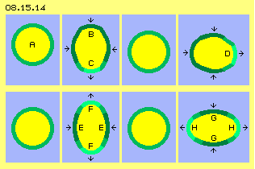
Diese Äther-Amöbe ist ein fiktives Gebilde - und jede Ähnlichkeit mit lebenden Einzellern wäre rein zufällig. Es kommt immer wieder die Frage auf, woher diese Tierchen die Kraft nehmen für ihr ständiges Herumzappeln. Sie sind nur eine zarte Hülle und das Wasser ihrer Umgebung ist im Vergleich dazu eine ´dickflüssige Suppe´. Die Antwort kann nur sein: sie wenden keine Kraft auf, sie lassen nur zu, dass gegebene Energie (sprich Ätherbewegung) wirksam werden kann. Durch Variation der Ätherschwingungen der Hülle steuern sie lediglich die Richtung und gestatten ihrer Hülle (plus Inhalt) dorthin zu fließen. Oder aber: die Äther-Amöbe ist so real wie das Gebilde, das wir als materielle Amöbe sehen. Die Äther-Amöbe (der Mental-Körper) führt (primär) die Veränderungen aus und in die Verformung der aetherischen Hüllen hinein folgen (sekundär) die sichtbaren, materiellen Partikel.
In der unteren Zeile dieses Bildes ist beispielsweise eine ´aetherische Muskelzelle´ dargestellt. Sie arbeitet analog obiger Amöbe, lediglich wird hier die Hülle an gegenüber liegenden Teilbereichen (E, dunkelgrün) weniger durchlässig und quer dazu (F, hellgrün) mehr durchlässig. Der Umgebungsdruck quetscht diese Zelle in horizontaler Richtung zusammen und drückt sie in vertikaler Richtung in längliche Form. Wenn die Hülle zur gleichmäßigen Durchlässigkeit zurück kehrt, wird sie wieder in die originale Kugelform gepresst. Wenn der Grad von Durchlässigkeit anders verteilt wird (bei G und H) kann die Zelle auch in horizontaler Ebene gestreckt werden.
Natürlich arbeiten reale Muskelzellen anders als diese fiktive aetherische Zelle. Dieses Beispiel zeigt aber noch einmal auf, dass es in Realität keine Anziehungskräfte gibt - und auch kein Muskel übt Zugkräfte aus. Zwar sind hier sogar die ´Zugseile´ vorhanden in Form der Sehnen, die Muskelzelle selbst aber kann nicht ziehen. Ihre Verkürzung in Zugrichtung kommt nur zustande durch ihre Ausweitung quer dazu. Selbstverständlich spielen dabei bio-chemische Reaktionen eine Rolle und es findet ein materieller ´Stoffwechsel´ statt (sonst würden die Muskeln bei großer Anstrengung nicht übersäuert). Es bleibt dennoch die Frage, woher der Druck für die Verkürzung in Zugrichtung kommen soll - nach meiner Überzeugung letztlich nur aufgrund des allgemeinen Ätherdrucks. Dann liegt es auch nahe, dass die Steuerung oder zumindest die Auslösung der materiellen Prozesse direkt über Veränderungen des Schwingens in der aetherischen Hülle erfolgen, welche den Muskel umgebenden (womit z.B. das obige Finger-Krümmen über ´mentale Wege´ gesteuert wird).
Äther-Motor
Dieses Zusammenspiel von Ätherbewegungen und materieller Motorik soll nochmals ein Beispiel aus der groben Mechanik einer Kraftmaschine aufzeigen, welche in Bild 08.15.15 mit einem Querschnitt schematisch skizziert ist. Hier kommt es darauf an, eine rotierende Bewegung zu erzeugen, so dass Äther sich auf Bahnen-mit-Schlag bewegt und das Schlagen fortwährend im Drehsinns der Maschine erfolgt. Dies wird mit wenig Aufwand erreicht, indem man Luft in rotierende Bewegung versetzt (im Bild nicht dargestellt). Die Luft wird z.B. tangential an einem Ende eines Hohl-Zylinders hinein gedrückt und am anderen Ende wieder tangential abgeführt. Durch ein Gebläse wird ein Kreislauf aufrecht erhalten, wozu nur geringer Aufwand erforderlich ist (weil die Strömung nirgendwo behindert wird). In diesem Zylinder bewegen sich die Luftpartikel immer in gleicher Weise und nach einiger Zeit nimmt auch der Äther zwischen den Luftpartikeln diese ´Strömungsrichtung´ auf (real bleibt er ortsfest schwingend, ist nun aber mit einem Schlagen in Drehrichtung überlagert).
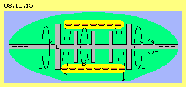
Diese schlagende Bewegung ist auch ohne den Umweg über das Medium Luft direkt im Äther zu generieren, z.B. durch ein rotierendes elektrisches Feld. In diesem Querschnitt ist eine Spule (rot) eingezeichnet, die beispielsweise aus flachem Kupferdraht locker gewickelt ist. In diese Spule wird pulsierend ein Gleichstrom (bei A) geleitet, wobei die Ladung (gelb) entlang der Leiter-Oberflächen zum anderen Ende hin gedrückt wird. Die Ladung selbst ist eine Ätherschicht von schwingenden Bewegungen, deren Schlagen entlang der Spule verläuft, also rund um die Systemachse und hier von links nach rechts (siehe Pfeil B). Da hier die magnetische Komponente des Stromflusses nicht behindert wird, ist ein Stromkreis mit geringem Widerstand zu organisieren.
In beiden Fällen weist der Äther in diesem zylinderförmigen Bereich ein synchrones Schlagen im Drehsinn des Systems auf. Nach einiger Zeit wird sich dieses Bewegungsmuster auch außerhalb des Zylinders und besonders entlang der Systemachse ausbreiten. Der Bewegungskern (der obigen Luft-Strömung oder des pulsierenden Gleichstroms in der Spule) wird eingehüllt durch einen weiten Bereich (grün) des synchronen Ätherschwingens mit Schlag im Drehsinn (siehe Pfeile C). Außerhalb davon, zum Freien Äther hin, ergibt sich ein Doppelkegel ausgleichender Bewegungen. Auf diesem lastet der generelle Ätherdruck der gesamten Umgebung. Wie bei einem Wirbelsturm wirkt radial einwärts gerichteter Druck auf die existierende Drehbewegung beschleunigend. Letztlich wird das Schlagen des Äthers nicht mehr aufrecht erhalten durch die Strömung der Luft bzw. der Ladung, sondern diese wird ihrerseits nun angetrieben und intensiviert durch das synchrone Ätherschwingen mit Schlag, letztlich aber durch äußeren Ätherdruck.
Wenn in diesem Äther-Bewegungskomplex massive materielle Teile vorhanden sind, wird auch deren atomaren Wirbelkomplexen dieses Schlagen aufgeprägt. Hier ist z.B. eine (Stahl-) Welle mit fünf Scheiben (D, grau) eingezeichnet, die ebenfalls in Rotation versetzt wird (siehe Pfeil E). So unglaublich es klingen mag: an dieser Welle kann nutzbares Drehmoment abgenommen werden. Mazenauers Maschine mag so funktioniert haben (bis sie nach Selbst-Beschleunigung zu Bruch ging), in einigen anderen Experimenten wurde ähnliche, ´unmögliche´ Effekte beobachtet (was man nicht glauben muss, aber selbst prüfen könnte).
Symbiotisches Leben
Voriger Motor ist ein typisches Beispiel unserer grobstofflichen Technik mit der Rotation von Gas-, Flüssigkeits- oder Festkörper-Teilchen. Gängige Technik handhabt nur reale Atome und wenige physikalische Kräfte. Diese akzeptiert man ebenfalls aufgrund ihrer realen Wirkungen, betrachtet sie aber dennoch so, als wären sie nur ´abstrakte Felder´. Beispielsweise ergibt elektrische Spannungsdifferenz den elektrischen Fluss und alles ist messbar, berechenbar und manipulierbar - aber man glaubt lieber an die langsam durch den Leiter kriechenden Elektronen anstatt eine schwingende Schicht realen Äthers auf den Leiteroberflächen zu unterstellen. Bei allen technischen Anwendungen gibt es Interaktion zwischen den kugelförmigen Wirbelkomplexen der Atome und Ätherbewegungen, die flächige bzw. räumliche Ausdehnung haben. Phänomenal ist also im gängigen Weltbild, dass nur diese Kugeln und ein paar Kräfte als materiell und real betrachtet werden - und alles Sonstige kein Thema naturwissenschaftlicher Betrachtung ist.
Natürlich kann man mit dieser Physik die ´tote´ Materie beschreiben und erklären, warum sich Atome zu Molekülen verbinden. Aber schon die Bildung von Kristallen zeigt (siehe obiges Beispiel der Druse), dass die Eigenschaften der Atome allein diese Erscheinungen nicht hervorbringen können, sondern zwischen den Atomen etwas Ordnendes sein muss. Natürlich können mit gängiger Bio-Chemie die Prozesse einer Zelle beschrieben werden. Dabei ist immer die Membrane von größter Bedeutung für das ´Leben´ des Lebewesens. Es ist aber schwierig zu verstehen, warum eine atomare Membrane diese vielfältigen Funktionen erfüllen kann und warum sie wo und wie reagiert. Wenn man eine zunächst rein aetherische Membrane unterstellt, ergibt deren Wand sowohl Stabilität wie Flexibilität (siehe obiges Beispiel der ´Äther-Amöbe´). Ihre Schwingungen sind leichter zu variieren als die groben Wirbelkomplexe von Atomen in neue Strukturen zu ordnen. Umgekehrt, können Atome in die Hülle hinein wachsen, d.h. der materielle Körper entwickelt sich nach Form und Funktion in eine rein ätherische ´Schablone´ hinein (was von vielen Forschern so gesehen wird).
Das Lebendige unterscheidet sich gegenüber ´toter Materie´ durch den Stoffwechsel, wobei ein Austausch mit der Umgebung statt findet. Natürlich ist das physikalisch per Osmose erklärbar. Per reinem Zufall können sich auch zwei unterschiedliche Zellen zusammen finden, bei denen die Ausscheidungen der einen Zelle die Nahrung der anderen Zelle ist, und umgekehrt. Diese Symbiose ist vorteilhaft für beide, also können sie eine erfolgreiche neue Einheit bilden, auch wieder mit einer gemeinsamen Membrane. Alle ´höheren´ Lebensformen sind symbiotische Vereinigungen von Organen zum gegenseitigen Vorteil - auch der menschliche Körper ist eine Ansammlung solch mehr oder weniger zweckdienlicher ´Baugruppen´.
Jedes Organ trägt zur richtigen Zeit die richtige Funktion in richtigem Umfang bei (in eigenem Interesse, weil sein Überleben von der Lebensfähigkeit des gesamten Organismus abhängt). Dazu ist Informationsaustausch erforderlich, der über Nervenbahnen und diverse Botenstoffe funktioniert. Man weiß inzwischen aber auch, dass alle Zellen einen intensiven Informationsaustausch pflegen - und zwar per Licht (was allerdings nicht per normaler Photonen erfolgen kann). Es ist typisch, dass dazu wieder ´Bio-Photonen-Teilchen´ vermutet werden - anstatt schlicht zu unterstellen, dass es nur ein Schwingen von Äther sein kann. Natürlich können dann alle Zellen über ihre aetherischen Membranen beliebige ´Signale´ heraus filtern. Jede Zelle kann über ´Membran-Fenster´ auch ihren Bedarf an ´Lebensenergie´ (oder gar das Schwingungsmuster zusätzlich erforderlicher chemischer Elemente) aus dem Meer aller Ätherschwingungen herein lassen und per Resonanz verstärken (siehe obige Beispiele der ´Druse´, ´Aufgeprägte Information´ und ´Energie-Filter´). Selbstverständlich ist auch jedes Organ in seiner Mental-Membrane eingehüllt - so wie jedes Lebewesen insgesamt neben den Atomen im ´Wesentlichen´ aus einem Mental-Körper besteht.
Es gibt im Tierreich klare Beispiele, dass auch individuelle Lebewesen sich einfügen in eine ´außerkörperliche´ Hülle und sich sogar durch diese steuern lassen - wie sonst wäre z.B. das Verhalten eines Fischschwarms zu erklären. Diese perfekte Synchronität kann durch materielle Sinnesorgane nicht erreicht werden, sondern nur über ein gemeinsames ´Ätherfeld´ zustande kommen. Noch einmal schwieriger ist zu verstehen, wie sich z.B. Bienen, Ameisen oder Termiten organisieren und solch riesige Gemeinschafts-Projekte zustande bringen. Die einzelnen Tiere können wohl kaum den Überblick haben und (per Verstand) erkennen und entscheiden, welche zweckdienliche Arbeit an ihrem jeweiligen Ort gerade zu leisten wäre. Reiner ´Instinkt´ wird dazu nicht ausreichen. Es muss ja nicht nur eine bestimmte Bewegungsrichtung koordiniert werden (wie bei vorigem Fischschwarm), die komplexe Organisations-Struktur (vergleichbar einer großen Unternehmung) muss ´intelligent´ gesteuert werden. Ein materielles Gehirn entsprechender Kapazität ist nicht vorhanden - nur ein alle Individuen umfassender Mental-Körper wird dazu fähig sein - total real existent im realen Äther - lediglich ohne materielle Atome.
Man wird über kurz oder lang nicht umhin können, solche Tier-Völker als mental-geistige Wesen zu verstehen - und es ist dann nur noch ´ein kleiner Schritt für die Menschheit´, auch ´Gaia´ als solches zu erkennen und zu akzeptieren.
Symbiose Verstand / Körper
Wir Menschen sind höchst selbständige Individuen und haben ein eigenes zentrales Steuer-Organ. Welche Vorteile hat nun der menschliche Körper durch sein überproportional großes Gehirn, das eher wie ein Schmarotzer drei Zehntel der umgesetzten Energien für sich beansprucht. Der Mensch denkt mit seinem Hirn, dort findet die rationale Analyse und Planung statt, dort wird mit Zahlen gerechnet, dort ist das Sprachzentrum angesiedelt, dort wird verbale oder schriftliche Kommunikation betrieben. Das sind die speziellen Fähigkeiten dieses Groß-Hirns und der restliche Körper profitiert in erster Linie durch die langfristige Planungen des Verstandes.
Selbstverständlich hat der Verstand einen freien Willen - und das oben angesprochene zeitliche Hinterher-Hinken tangiert die freie Entscheidung keinesfalls. Der Verstand ist vielmehr klug genug, alle unmittelbar lebenswichtigen Prozesse den anderen Organen (bzw. deren Mentalkörpern) zu überlassen. Der Verstand konzentriert sich nur auf die ´langfristigen´ Planungen, z.B. die prinzipielle Entscheidung, genau dort einen Nagel in die Wand zu schlagen. Den eigentlichen Akt der Durchführung überlässt er dem ´Gefühl´. Ein Fußballspieler mag per Verstand eine Bananenflanke planen, aber die Ausführung ist reine Gefühlsache (das Hirn wäre viel zu langsam für die Berechung der dabei einzusetzenden Vektor-Kräfte). Der Verstand eines Tennisspielers kann während Sekunden die Spielsituation analysieren und beschließen, dass ein Top-Spin gegen die Laufrichtung zu spielen ist. Die präzise Durchführung des Schlages entscheidet sich in Millisekunden - und ist Sache des Gefühls. Bei gleich starken Sportlern entscheidet letztlich immer die ´mentale Stärke´.
Es könnte aber durchaus sein, dass es neben diesem Hirn-Verstand einen anderen Verstand gibt. Gerade den besten Sportlern wird nachgesagt, dass sie besonderes ´Spiel-Verständnis´ haben und ihre beste Leistung bringen sie im Zustand eines ´Flows´: per direktem Handeln ohne Umweg über das Hirn. Zum anderen gibt es Menschen mit hohem Intelligenz-Quotienten, obwohl ihr materielles Gehirn z.B. durch Unfall stark beschädigt wurde - oder gar keines vorhanden ist. So phänomenal es scheinen mag: Hirn und Verstand sind nicht primäre und unabdingbare Notwendigkeit für unser Handeln und Denken.
Intelligenz und Unterbewusstsein
Im Normalfall aber profitiert der menschliche Körper durch intelligente Planungen des Verstandes, wobei er sich klugerweise weitgehend zurück hält bei deren Umsetzung in materielle Aktionen. Meist wird ´Intelligenz´ zu eng ausgelegt, z.B. an Sprachfähigkeit gebunden (weil der Verstand sogar Buchstaben erfunden hat) oder auf mathematische Fähigkeiten bezogen (weil der Verstand auch Ziffern und Zahlensysteme entwickelt hat) oder an logischem Denkvermögen gemessen (weil der Verstand vorwiegend per Warum-Fragen analysiert). Diese Art von Intelligenz wird total überschätzt. Der Verstand kann z.B. logische Operationen nur mit wenigen Faktoren durchführen, sehr mühsam, zeitaufwändig und fehlerhaft (und darum gehen viele Planungen total daneben).
Unangenehme Vorkommnisse wie eigen-verursachte Misserfolge (oder extern-verursachte und belastende Ereignisse) versteckt der Verstand in die ´Rumpelkammer´ des Unterbewussten (aber gelegentlich tauchen Erinnerungen dennoch auf). Wenn dieser Speicher nicht zu voll gestopft ist mit Belastendem, hat das Unterbewusstsein aber auch sehr förderliche Eigenschaften: man kann es ´mental beauftragen´ (´bitten´ ist wirkungsvoller) irgendeine Frage zu bearbeiten - und irgendwann liefert das Unterbewusstsein eine Antwort. Der Verstand ist sich seiner Selbst voll bewusst. Manchmal aber fragt er sich, wie dieses Unterbewusstseins-Dingsda so viel wissen und solch intelligente Dienste leisten kann, oft sogar in klaren Worten und exakten Zahlen.
Kluge Menschen nutzen eine ganz andere ´Intelligenz´ (besonders wenn Entscheidungen rasch zu treffen sind): das Bauch-Gefühl. Das ist für den normalen Verstand noch unangenehmer als das Unterbewusstsein, weil sich Gefühle weder in Worte noch in Zahlen fassen lassen. Das Bauch-Gefühl ist unglaublich zuverlässig, es arbeitet ständig und hält Antworten in jeder Situation blitzschnell bereit. Das ist für den langsamen Verstand wiederum höchst suspekt und er muss sich geradezu durchringen, ausnahms- und ersatzweise mal den Bauch entscheiden zu lassen.
Man kann das Speichern von Daten und die Arbeit des Verstandes als Funktionen des Gehirns betrachten, mit Vorbehalt auch noch die Leistungen des Unterbewusstseins. Dieses wären somit Aktivitäten der materiellen Welt. Das ´Bauch-Gefühl´ verfügt aber über keine materielle Sinnesorgane und verfügt dennoch über sehr viel mehr Informationen. Es gibt kein Organ für die Speicherung noch für die Verknüpfung dieser Daten - und weil diese Prozesse nicht nur im (Nichts des) Abstrakten ablaufen können, müssen sie Bestandteil oder Funktion eines realen Mental-Körpers sein.
Symbiose von mentalen und materiellen Körpern
´Mens sana in corpore sano´ - wenn es dem Körper gut geht, ist auch die Stimmung gut - oder aber: es bedarf eines gesunden Geistes, wenn der Körper gesund sein soll (siehe chinesisches Verständnis von Energiefluss und Behandlung von Krankheits-´Symptomen´). Es kann keinen Zweifel geben, dass es materielle Körper gibt - auch wenn sie real nur aus Äther-Wirbelkomplexen bestehen. Nach allen oben diskutierten Fakten (und weit verbreiteter Anschauung) besitzt genauso zweifelsfrei jedes Lebewesen zugleich einen Mental-Körper. Ich weiche davon nur insofern ab, als ich ´astral oder mental, seelisch oder geistig´ nicht als irgendetwas Abstraktes betrachte, sondern für mich das ebenso reale Schwingungsmuster des Äthers sind, völlig gleichwertig zu den Atomen, nur sehr viel variantenreicher als diese.
Beim Menschen hängt zwischen dem Geistigen und Materiellen der Verstand als ein Vermittler oder gar als Zwitter. Andere Tiere haben kein so großes Hirn, aber wir sollten daraus nicht schließen, dass sie weniger Verstand hätten. Sie analysieren nur nicht pausenlos ihre Situation und ihr Umfeld auf unsere Art. Sie planen auch nicht pausenlos ihre Zukunft. Es gibt viele Menschen, die das auch nicht tun - und nicht notwendig haben: weil sie über ihr ´Bauchgefühl´ ohnehin und unmittelbar über alle Informationen verfügen und zur rechten Zeit das Richtige tun.
Das ist die ´praktische Intelligenz´ aller Lebewesen - die ganz ohne Buchstaben und Zahlen funktioniert. Das eigentliche Dilemma unseres Verstandes ist also, dass die ganze Fülle von Informationen zwischen allen Arten von aetherischen Hüllen (der Zellen, der Organe, des Körpers und zwischen den Lebewesen) über Gefühle ausgetauscht werden oder bildhaft verschlüsselt sind (womit naturgemäß der Verstand nichts anfangen kann). Alle interne Kommunikation zwischen den Organen eines Körpers verläuft so, aber auch Tiere aller Arten kommunizieren unmittelbar auf diesem mentalen Weg.
Nur wir Menschen sind so fixiert auf Informationsaustausch per Sprache. Manche geben ihrem Hund den verbalen Befehl ´Sitz-Platz´ und der Hund versteht - sofern das Herrchen / Frauchen nicht zugleich visualisiert hat, wie ihr Hund sich nächstens auf den Bastard dort drüben stürzen wird. Dieses telepatisch vermittelte Bild erreicht viel schneller und intensiver die mentale Hülle des Hundes als die Luft-Vibrationen seine materiellen Ohren erschüttern. Der Hund ist hin und her gerissen, was Herrschen / Frauchen nun tatsächlich will, die wilde Schlägerei oder das langweilige Hinhocken. Vielleicht sollten die Alpha-Tiere nächstens visualisieren, wie der Beta-Genosse sich hinsetzt und hinlegt und gelangweilt in die Gegend schaut - es funktioniert - sofern ein mentaler Kanal zwischen beiden existiert.
Symbiose Seele-Verstand-Körper
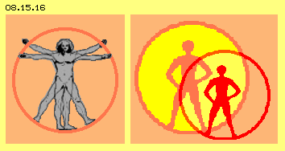
Der bekannte ´Mann im Kreis´ ist doppelt gezeichnet, aber eigentlich ist jeder Mensch ziemlich viele: eine ´geistige´ Seele, ein ´materieller´ Körper, dieser eingebettet in und durchdrungen vom ´Mental-Körper´, auch in vielen Schichten, auch jeweils um und in jedem Organ und jeder Zelle. Und dazwischen hängt irgendwie der Verstand, einerseits mit dem materiellen Hirn verknüfpt, andererseits durchaus in Kontakt zu ´Geistigem´. Die Seele bildet eine seltsame Symbiose mit diesem Vermittler zwischen mentalen und materiellen Vorgängen. Einerseits vermittelt sie dem Verstand ab und an hilfreiche Informationen aus geistigen ´Dimensionen´ (siehe Unterbewusstsein oder Bauchgefühl, ´innerer Drang´ oder ´innere Stimme´). Andererseits überlässt die Seele dem Verstand die Vorsorge für das biologische Überleben des materiellen Körpers (etwa so wie der Verstand die eigentlich lebensnotwendigen Prozesse den Organen überlässt).
Die Symbiose zwischen Seele und materiellem Körper ist noch etwas seltsamer: eigentlich ist die Seele ein diffiziles Ätherschwingen, das frei im Raume existieren und herum fliegen kann. Andererseits hat sie sich für ein paar Jahre ´eingemietet´ in einen materiellen Körper. Bei ihrer Inkarnation bringt sie den Mental-Körper ein, also die ´wesentliche´ Voraussetzung für die Existenz des Lebewesens. Dieses (zeitweilige) materielle Heim bleibt fortan abhängig von der Pflege durch ihren (unsterblichen) geistigen Mieter.
Der Verstand delegiert Aufgaben an die Organe und hat damit viel Freizeit, kann seinem Hobby des Warum-Fragens und Planens nachgehen, nach freiem Willen. Genauso hat die Seele durch ihr Delegieren an den Verstand viel Freizeit und kann sich genauso aus freiem Willen mit beliebigen Themen beschäftigen. Kurz nach dem Einzug in den materiellen Körper ist natürlich besonders spannend, was sich in dieser - ungewohnten und beengten - Umgebung der materiellen Welt erreichen lässt. Wie im Sandkasten geht es zunächst darum, möglichst viel Sand anzuhäufen und anderen Kids die Spielsachen zu klauen. Mit Gefühlen von Macht, Gier, Habsucht, Neid und Zwietracht lässt sich der Verstand und Körper antreiben - ob langfristig zur Gesundheit aller, mag fraglich sein.
Irgendwann mag sich die Seele fragen, wozu das alles taugen soll, könnte sich für Nachbar-Seelen interessieren, könnte gar Glück empfinden, wenn es auch anderen gut geht oder könnte das Fördern gar zu seinem Hobby machen - und es wird nicht abträglich sein für die Gesundheit aller Beteiligten, körperlich wie mental. Letztlich könnte sich die Seele ganz generell fragen, welcher Job in diesem Hier-Sein wohl Sinn machen könnte oder gar beabsichtigt war. Ich unterstelle, dass dem Leser solche Themen wie Nahtod-Erfahrungen und außerkörperliche Erfahrungen, Karma und Wiedergeburt usw. nicht fremd sind. Ich muss darauf nicht weiter eingehen, sondern will andere Aspekte hervor heben.
Bildersprache und Gefühle
Ein gebildeter Mensch kennt zehntausende Worte, im Alltag reichen aber ein paar hundert. Es gibt jede Menge Fachbegriffe in jedem Sachgebiet, aber die meisten sind entlehnt aus anderen Fachgebieten oder dem alltäglichen Umfeld (z.B. Strom, Spannung, Feld bei der Elektrizität). Die Fülle der Worte ergibt sich ohnehin aus Zusammensetzungen (z.B. Wasserfall oder Potentialdifferenz). Trotz der Vielfalt unserer sprachlichen Ausdrucksmittel basiert diese auf einer überschaubaren Menge von Wortstämmen - oder auf Bildern oder gar nur auf Gefühlen.
Es gibt z.B. nicht ´das Feld´, es gibt vielmehr einen Acker mit Weizen, Mais, Bohnen, Rüben usw. und mit diesem Feld-Begriff verbinden wir nicht das Bild eines konkreten Ackers, auch keine abstrakte ´Idee eines idealen Ackers´ - sondern letztlich das Gefühl, ein Stück Erde zu bestellen, zu bearbeiten, die Pflanzen im Sonnenlicht zu sehen oder die Früchte zu ernten. Manche mögen das nicht selbst erlebt haben, kennen das nur aus der Beobachtung anderer oder nur aus der Literatur. Wir benutzen den Feld-Begriff in vielfältig übertragenem Sinne, aber dahinter steht letztlich dieses Gefühl. Bei ´Spannung´ erinnert sich wohl jeder an das Gefühl aus Kindertagen, einen Pfeil zu halten und den Bogen zu spannen. Bei ´Strom´ denken wir nicht an einen bestimmten Fluss, sondern an das Gefühl am Ufer zu sitzen und dem Fließen zuzuschauen. Wir nutzen wohl den Begriff ´Potentialdifferenz´ rein abstrakt, im Hintergrund denken wir an aufgestautes Wassers, an welches sich das Bild eines Wasserfalls anschließt - und erinnern uns wie sich das dort im Sprühregen angefühlt hat.
Unser Verstand hat einen Zeichensatz von nur ein paar Buchstaben und Ziffern und ein paar andere Zeichen entwickelt oder die Abstraktion auf die Spitze getrieben, indem Computer alles Wissen speichern können - nur per 0 und 1. Wir kommunizieren über Worte, die eigentlich nur bildhafte Symbole sind, meist entlehnt aus dem alltäglichen Umfeld. Aber es sind eigentlich keine scharfen Bilder, sondern die damit erinnerten Gefühle. Diese sind die eigentliche Basis, weil sie sich nicht wieder mit Worten beschreiben lassen. Darum mag unser ´wissenschaftlicher´ Verstand solche Gefühlsduseleien nicht so sehr - obwohl er letztlich nicht anders als in Bildern denken kann - und letztlich dabei nur Sinnbilder von Gefühlen handhabt.
Das Leben braucht ´vier Buchstaben´, aus deren Kombination in der DNA die Vielfalt aller Lebewesen hervor geht. Die materielle Welt besteht aus den etwa hundert unterschiedlichen Wirbelsystemen der chemischen Elemente und schon ein Teil davon ermöglicht die Mehrzahl der unglaublich vielfältigen Moleküle. Unsere mental-geistige Welt besteht auch aus Schwingungsmustern - und wieviele ´Gefühls-Archetypen´ sind dazu erforderlich? Reichen zwanzig, hundert oder tausend, um eine ausreichende Vielfalt zu erreichen? Dienen diese (wie Worte) nur zur Beschreibung von irgendetwas - oder sind sie das Eigentliche, was die reale Welt des Geistigen an sich ist?
Die materiellen Wirbelsysteme haben zwar keine scharfe Grenze, sind aber dennoch lokal fixiert, eben so wie ein materieller Körper nur einen bestimmten Raum einnimmt. Der Mental-Körper stellt eine Hülle dar, aber seine Grenzen sind noch fließender als die der Materie. Auch unsere Seele darf man sich als eine Hülle vorstellen, die eng begrenzt ist (wenn jemand ´verschlossen´ ist), sich aber auch weit aufmachen kann (oder zumindest teilweise im Raum herum reisen kann).
Gewagte Frage: was macht den Inhalt eines Mental-Körpers oder einer Seele aus? Spekulative Antwort: es ist die Mixtur an Schwingungen, durch welche ´Gefühle´ (bzw. ihre Kombinationen) repräsentiert werden. Machen diese realen Schwingungsmuster unsere Individualität aus? Wir können die Membrane dicht machen und unsere Gefühle verbergen. Andererseits strahlen wir nach außen natürlich immer diese Mixtur ab und nehmen natürlich auch die Ausstrahlung unserer Nachbarn war - und fällt darum beispielsweise unser ´Bauchgefühl´ so unglaublich schnell sein meist zutreffendes Urteil? Ist die Seele ´gesund´, wenn innere Schwingungsmuster mit denen der Umgebung weitgehend überein stimmen und ´krank´, wenn es schwer fällt Divergenzen auszugleichen?
Quelle des Wissens
Relativ sicher dürfte sein, dass wir mit unserem Fühlen, Denken und Handeln beitragen zur Verstärkung entsprechender Inhalte in einem ´morphischen´ Feld (was Sheldrake und andere ausreichend durch Experimente belegt haben). Im weiten Raum des Äthers wäre somit ´alles´ gespeichert - für uns unvorstellbar, trotz der Vielzahl potentieller ´Frequenzen´. Wenn aber alles Wissen und alle Ereignisse codiert sind mit einer überschaubaren Anzahl Gefühls-Archetypen, stehen überall nur diese relativ wenige Schwingungsmuster im Raum. So wie komplexe sprachliche Begriffe durch die Kombination von zwei oder drei Bild-Symbolen gebildet werden, können mehrere Gefühls-Symbole durch Überlagerung mehrerer Schwingungsmuster einen bestimmten Inhalt repräsentieren.
Innerhalb der Hülle einer Seele oder eines Mental-Körpers ist jeweils nur eine Auswahl aller Schwingungen vorhanden (obige Mixtur des Individuums). Die aetherischen Hüllen bewirken die lokale Separation, je nach Abschottung oder Öffnung mehr oder weniger. Außerhalb aller Hüllen aller Lebewesen sind dann die Gesamtheit aller Schwingungsmuster und deren Kombinationen vorhanden - und da nicht lokal durch eine Hülle eingeschränkt, ist ´Geistiges´ überall zugleich präsent.
Jede Seele hat die volle Freiheit, womit sie sich in ihrer ´Freizeit´ beschäftigen will. Es steht ihr frei, in ihrer Membrane beliebige ´Fenster´ einzurichten mit bestimmten Schwingungsmustern, die als Filter wirken und zutreffende Schwingungen ins Innere einlassen (wie oben schon beschrieben). Wenn die Seele ´die Beine baumeln´ lässt, klappert sie bekannte und wohltuende Schwingungsmuster ab, verstärkt positive Schwingungen, zu ihrem Wohle und damit indirekt natürlich auch zum Wohle ihres mentalen und materiellen Körpers. Die Seele kann aber auch von sich aus neugierig sein - oder weil ihr Warum-Frage-Verstand drängelt - und ein ´unscharfes´ Muster oder eine neue Muster-Kombination in ein Fenster stellen - und wird zutreffende Ergänzungen heraus fischen können (wie heute per Suchmaschinen leicht zu verstehen). Andererseits ´klopfen´ alle Schwingungsmuster ständig an die Hülle der Seele und ´bieten´ sich an. Je nach Grund-Einstellung und Erfahrungen wird die Seele den Einlass zulassen oder zumachen. Für mich ist immer wieder faszinierend, wenn man unvermittelt ´eine Idee geschenkt bekommt´ - wie es der Verstand allein nie zustande brächte.
Ufo Mensch
Jeder Mensch hat also theoretisch Zugriff auf alles - und das direkt vor der Haustüre. Die Seele hat den freien Willen und sie hat gewiss ein ´Lebensenergie-Fenster´, also auch die Kraft ihren Fokus nach Belieben zu setzen. Ein ´Frage-Fenster´ zu installieren dürfte ähnlich zu machen sein, wie z.B. die Ufos ihr Gravitationsfeld manipulieren. Vermutlich brauchen die Aliens dazu keinen materiellen Apparat und steuern ´rein mental´ (wie oben schon angedeutet). Vermutlich fahren sie nur gelegentlich den Aufwand (oder Spaß), auch materielle Erscheinungen zu simulieren oder gar die Wirbelkomplexe der Materie wirklich zu generieren. Im Wesentlichen aber werden die Aliens geistige Wesen sein - so wie wir auch. Allerdings sind sie sich dessen voll bewusst und können mental so viel mehr erreichen und erleben - dass ihnen die derzeitigen Menschen recht kindisch erscheinen und kaum einer ´auf gleicher Wellenlänge´ zu finden ist oder ein sinnvoller Dialog zustande kommen könnte.
Ich möchte noch einmal an obigen Hund erinnern: es wird eine mentale Vision gesendet und der Hund empfängt und akzeptiert und setzt diese in reale Handlung um. Diese Vision steht zwischen Sender und Empfänger im Raum bzw. konkret ist dem dortigen Äther aufgeprägt - und nichts anderes als diese Aufprägung will der Chef-Pilot des Ufos erreichen: dass der umgebende Äther nun den gewünschten ´Gravitations-Schlag´ annimmt. Und wir können das genauso - wenn wir nur davon überzeugt wären, dass es so funktioniert: wünschen und es tritt ein.
Ich unterstelle, dass die Leser die wissenschaftlichen Beweise kennen, z.B. wo hunderte Studenten gebeten wurden, die zufallsgerechte Verteilung zu beeinflussen (Kugeln fallen durch ein ´Nagelbrett´ und jede Kugel hat an jedem Nagel die freie Wahl rechts/links) oder den Zufallszahlen-Generator eines Computers geistig zu manipulieren. Es funktioniert schlicht und einfach, mit signifikanten Ergebnissen.
Genauso sicher ist belegt, dass die Seele ´fliegen´ kann. In Nah-Tod-Situationen fliegt sie ein paar Meter höher und registriert voll Erstaunen, was an dem klinisch toten Körper da unten hantiert wird. Eventuell fliegt sie auch durch den bekannten Kanal ins Licht und sieht ´unwirkliche´ Farben (und ich vermute, dass auch die unwirkliche Helle bei Ufos nicht per Augen wahrgenommen wird, sondern die Seele das sieht). Die Seele erhält drüben rasend schnell viele Informationen, natürlich nicht über verbale Kommunikation sondern durch unmittelbares Verstehen (wie wenn Menschen von ETs informiert werden). Wenn diese Seelen zurück-fallen in ihren Körper - sind sie meist enttäuscht - und verändert, weil sie das Hier nun ganz anders einordnen können. Manche Menschen können aus freiem Willen per ´Astral-Reise´ an beliebige Orte fliegen.
Ich selbst hatte nur indirekt Anteil an solchen ´Ausflügen´ im Rahmen von Remote-Viewing. Die Viewer bleiben bei vollem Bewusstsein, nur der Verstand wird mit Nebensächlichem so beschäftigt, dass er nicht ständig seinem Warum-Hobby nachkommt bzw. vorschnelle ´logische´ Erklärungen abgibt. Ich weiß nicht, ob ´Ableger´ der Viewer-Seele räumlich zum Ziel fliegt, aber eine Möglichkeit wäre folgende: eine ähnliche Schwingungs-Mixtur ist zumindest teilweise überall im Raum vorhanden und er müsste am Ziel ´nur´ eine Resonanz-Hülle etablieren, um tatsächlich auch dort zu sein. Er kann die dortigen Schwingungen registrieren und ´nach Hause´ schicken. Wenn der Viewer ein zweites mal dort hin geschickt wird, ist er viel schneller ´on target´. Offensichtlich wird ein Kanal installiert, weil nun auch andere Viewer viel schneller und sicherer dort ankommen.
Um noch einmal die Reisen der Aliens anzusprechen: wenn sie ein erstes mal einen Kanal hier her aufgebaut und eine ´Duftmarke´ hinterlassen haben (also eine mentale, aetherische Hülle zur Intensivierung bestimmter Schwingungen per Resonanz), können sie ´zeitlos´ schnell reisen (her und zurück nach Belieben) und von dieser Basis aus aufgrund ihrer mentalen Fähigkeiten auch ein Ufo ´bauen´ - aus dem ´Nichts´ heraus den Äther in gewünschte Schwingungen versetzen, so dass es reale Erscheinung wird (auch Nahtod-Erfahrene und Astral-Reisende erzählen genau solche Wünsch-Dir-Was-Erfahrungen).
Eine andere Erklärung für Remote-Viewing könnte folgende sein. Wenn alles für immer im Raume steht in Form von Schwingungsmustern, so überlagern sich nun drei Muster: die Viewer-Mixtur, die Frage-Mixtur und die Mixtur des gesuchten Ereignisses. Aus der Schnittmenge könnte der Viewer - praktisch vor der Haustüre - die gewünschten Antworten heraus filtern.
Generell gilt folgendes: die Viewer sehen die materiellen Gegenstände des Zieles nicht wie mit materiellen Augen. Sie können auch selten exakte Bezeichnungen liefern, sondern umschreiben es mit bildhaften Symbolen (die natürlich auch Fehlinterpretationen zulassen). Erstaunlicherweise aber können sie deutlich über Gefühle berichten, wie es schmeckt, riecht, sich anfühlt und wie die Stimmung insgesamt dort ist (eben so wie unsere Seele die Realität bevorzugt wahrnimmt).
Schlussbemerkung
Damit aber will ich diese Erörterung normaler und para-normaler Erscheinungen abschließen. Ich habe mich ohnehin zu entschuldigen für dieses zu lang geratene Kapitel, die lange Aufzählung von Beispielen aus unterschiedlichen Sachgebieten (und vermutlich wird erst beim zweiten Lesen ein roter Faden zu erkennen sein). Andererseits wollte ich bewusst aufzeigen, dass und wie in diesem lückenlosen Äther alles mit allem zusammen hängt. Besonders hervor heben wollte ich die umfassende Bedeutung rein aetherischer Wände, Röhren und Membranen und der ´eigenständigen Welten´ innerhalb dieser Hüllen. Besonders (lebens-) wichtig sind die ´Membran-Fenster´ und deren ´Zulassen des Zufließens´ von Energie und Information. Damit erst werden viele ´banale´ physikalische Phänomene erklärbar und ergeben sich Ansatzpunkte für das Verständnis auch para-physikalischer Phänomene.
Entschuldigen muss ich mich auch für den etwas ´lockeren´ Umgang mit Begriffen wie astral, mental, Geist, Seele, Verstand, Unterbewusstsein und ähnlichem. In esoterischer, spiritueller oder psychologischer Literatur sind diese präziser definiert - aber höchst unterschiedlich. Vielleicht kann ich in ein paar Jahren einen besseren Beitrag dazu leisten. Jedes angeschnittene Thema müsste ohnehin durch ein eigenes Kapitel präzisiert werden - was ich gelegentlich auch angehen werde.
Natürlich sind viele der obigen Überlegungen sehr spekulativ und gewiss nicht nach jedermanns Geschmack. Ich habe praktisch nur protokolliert, wozu mein ´Warum-Frager´ nach Antworten drängte oder was meine Seele von sich aus schon immer wissen wollte, war also mental fokussiert - und protokollierte wiederum nur, was durch die ´Frage-Fenster´ mir an Gefühls-Einsichten zufiel. Wie weit das mit realer Wirklichkeit überein stimmen könnte - muss jeder Leser nach seinem Gefühl für sich beurteilen. Ich hoffe nur, dass Hirn und Bauch manchen Lesers generellen Spaß hatten und gelegentlich vielleicht sogar eine brauchbare Anregung fanden.